Communication in Distributed Systems
Chapter 3: Communication in Distributed Systems
Purpose: A standalone engineering reference for how distributed components exchange information, how communication fails, and how APIs, serialization, messaging, retries, idempotency, and gossip are used to build reliable systems.
Scope note: This chapter separates protocol guarantees from application guarantees. A transport can deliver bytes reliably while a business operation still executes twice; a broker can persist a record while a downstream database transaction fails. Whenever a guarantee is discussed, its boundary is stated explicitly.
Learning objectives
After studying this chapter, you should be able to:
- Explain the lifecycle of a message from an in-memory object to a remote process and back.
- Select among RPC, REST, GraphQL, point-to-point messaging, publish-subscribe, and gossip.
- Describe gRPC, HTTP/2, Apache Thrift, and common RPC failure modes.
- Design resource-oriented HTTP APIs and typed GraphQL schemas.
- Choose JSON, Protocol Buffers, Avro, or MessagePack and evolve schemas safely.
- Distinguish delivery semantics from processing semantics and implement idempotent consumers.
- Design retries, backoff, jitter, deadlines, and circuit breakers without causing retry storms.
- Explain epidemic dissemination, anti-entropy, and SWIM-style membership.
- Recognize the limits of simplified examples and identify what production systems must add.
Prerequisites
- Basic networking: IP addresses, DNS, TCP, UDP, ports, TLS, and HTTP.
- Basic backend development: processes, threads, asynchronous I/O, APIs, and databases.
- Basic data structures and Python programming.
- Familiarity with transactions, primary keys, unique constraints, and database isolation is helpful.
Table of contents
- 1. Introduction to communication
- 2. RPC fundamentals
- 3. gRPC
- 4. Apache Thrift
- 5. REST APIs
- 6. GraphQL
- 7. RPC vs. REST vs. GraphQL
- 8. Message passing vs. shared memory
- 9. Serialization and deserialization
- 10. JSON
- 11. Protocol Buffers
- 12. Apache Avro
- 13. MessagePack
- 14. Schema evolution and compatibility
- 15. Message delivery semantics
- 16. Idempotency and deduplication
- 17. Retries, backoff, jitter, and timeouts
- 18. Gossip and epidemic protocols
- 19. Communication-pattern comparison
- 20. Real-world architecture case studies
- 21. Practical engineering implementations
- 22. Mathematical reference
- 23. Interview questions and answers
- 24. Common mistakes and production practices
- 25. Chapter summary
- 26. Key takeaways
- 27. Glossary
- 28. Further reading and references
1. Introduction to Communication in Distributed Systems
1.1 What communication means
A distributed system consists of independent processes that cooperate to provide one logical application. The processes may run in separate containers, virtual machines, physical hosts, availability zones, or geographic regions. Communication is the exchange of requests, responses, commands, events, state snapshots, and control information across those boundaries.
A process cannot normally dereference another machine’s memory as if it were local memory. It must encode information into bytes, hand those bytes to a transport, and rely on the receiving process to interpret and act on them. The network is not a transparent extension of a function call: packets can be delayed, connections can break, machines can restart, and the sender can lose the response after the receiver has already performed the operation.
Communication is needed to:
- retrieve information owned by another service;
- request a state transition, such as creating an order or reserving stock;
- publish facts that other components may independently consume;
- replicate data or propagate membership and health information;
- coordinate workflows that span multiple services;
- carry telemetry, traces, heartbeats, and control-plane updates.
Processes on one host vs. across hosts
| Property | Same-host processes | Processes on different hosts |
|---|---|---|
| Common mechanisms | Pipes, Unix domain sockets, shared memory, loopback TCP | TCP, UDP, QUIC, HTTP, RPC, brokers |
| Data movement | May avoid a physical network interface; shared memory may avoid copying | Requires a network stack and network path, often with multiple copies and buffers |
| Failure domain | Processes can fail independently; host failure affects all | Host, NIC, switch, route, firewall, DNS, and remote-service failures are possible |
| Latency | Usually lower and less variable | Usually higher and more variable |
| Memory | Can sometimes be shared directly | Separate address spaces; explicit serialization is required |
| Security | OS permissions and process isolation | Network identity, TLS, authentication, authorization, network policy |
Loopback TCP is still network-style communication even on one machine. Shared memory is a different model: processes map the same memory region and must coordinate access to it explicitly.
1.2 Network communication fundamentals
A typical request traverses several layers:
- Application layer: REST, gRPC, a broker protocol, or a custom protocol defines messages and semantics.
- Transport layer: TCP provides an ordered byte stream; UDP provides datagrams; QUIC provides multiplexed streams over UDP with transport security integrated into its design.
- Network layer: IP routes packets between networks.
- Link layer: Ethernet, Wi-Fi, and data-center fabrics deliver frames over a local link.
DNS resolves names to addresses. TLS authenticates peers and protects confidentiality and integrity when configured correctly. Proxies, load balancers, service meshes, firewalls, NAT, and gateways may be inserted along the path.
TCP retransmits lost segments and presents an ordered byte stream,
but it does not turn a remote operation into an atomic
transaction. If a client sends POST /payments, the server
commits the charge, and the connection breaks before the response
arrives, the client cannot infer from the broken connection whether the
charge happened. This is the classic uncertain outcome
problem.
Useful latency components are:
For a multi-hop request, include every downstream call and queueing interval. The tail of the latency distribution matters: a dependency with low median latency but a poor p99 can dominate user-visible response times.
1.3 Communication styles
Synchronous and asynchronous
These terms describe interaction and waiting, not whether the underlying network is synchronous.
- Synchronous request-response: the caller waits for a result or failure before continuing. REST and unary RPC commonly use this shape.
- Asynchronous messaging: the producer hands a message to a broker or destination and can continue without waiting for the consumer’s business processing. The producer may still wait for broker acknowledgment.
- Synchronous API, asynchronous implementation: an
HTTP endpoint can enqueue a job and immediately return
202 Accepted; the HTTP interaction is request-response, while the workflow is asynchronous.
Blocking and non-blocking
A blocking call ties up the calling thread or execution context while waiting. A non-blocking API returns control and later reports completion via a future, callback, coroutine, or event. Non-blocking I/O improves concurrency for I/O-heavy services, but does not make the remote operation faster or eliminate backpressure.
Request-response
The caller addresses a destination and expects a response correlated to its request. This is suitable for reads, validations, and commands whose caller needs an immediate result. The caller and callee are temporally coupled: the callee must be reachable during the call unless an intermediary buffers the request.
Point-to-point and publish-subscribe
- Point-to-point: a producer sends a message to a logical queue; typically one competing consumer receives each message under the queue’s delivery semantics.
- Publish-subscribe: a publisher emits an event to a topic; multiple subscriptions may each receive a copy. Consumers can evolve independently, but the publisher has less knowledge of downstream completion.
A broker may implement both patterns. The exact delivery, persistence, ordering, and acknowledgment guarantees depend on broker configuration and client behavior.
1.4 Communication lifecycle
A typical message lifecycle is:
- Create: a component creates a command or event in memory.
- Validate: required fields, authorization context, and invariants are checked.
- Serialize: the object becomes a byte sequence, possibly with schema metadata.
- Transmit: bytes are written to a socket or broker client; the transport fragments and routes them.
- Receive: the remote stack reassembles bytes and passes them to the application protocol.
- Deserialize: the receiver reconstructs the message and validates its schema/version.
- Process: the application performs business logic and may write to a database or call another service.
- Acknowledge/respond: the receiver returns a response or an acknowledgment according to the protocol.
- Observe outcome: the sender records success, failure, timeout, or uncertainty and decides whether retry/reconciliation is safe.
An acknowledgment is meaningful only when its scope is understood. It might mean “bytes reached a broker,” “record was replicated,” “consumer callback returned,” or “business transaction committed.” These are different milestones.
1.5 Common communication failure modes
| Failure | What it means | Typical mitigation |
|---|---|---|
| Latency | Response arrives later than expected | Deadlines, tail-latency budgets, load shedding, caching |
| Message loss | A datagram or unacknowledged message does not reach the receiver | Reliable transport, broker persistence, acknowledgments, retries |
| Duplicate delivery | The same logical message is delivered more than once | Idempotency keys, event IDs, inbox/deduplication table |
| Reordering | Messages arrive in a different order from the producer’s send sequence | Partitioning, sequence numbers, causal dependencies, ordered log |
| Partition | Some nodes cannot communicate although they may still run | Timeouts, degraded modes, quorum protocols where needed |
| Unavailability | Service has no healthy capacity or rejects requests | Replicas, health checks, circuit breakers, queueing, failover |
| Protocol mismatch | Sender and receiver interpret bytes differently | Versioned schemas, compatibility checks, contract tests |
| Serialization failure | Invalid or incompatible payload | Validation, schema registry, dead-letter handling |
| Timeout | Caller stops waiting before outcome is known | End-to-end deadlines, idempotency, reconciliation |
| Congestion | Offered load exceeds network or service capacity | Flow control, admission control, bounded queues, capacity planning |
| Backpressure | Receiver signals or enforces that upstream must slow down | Bounded buffers, demand-aware streams, rate limiting |
1.6 Example: e-commerce service communication
Consider an e-commerce platform with an API Gateway, Authentication, User, Product, Inventory, Order, Payment, and Notification services.
Browser / Mobile App
|
v
API Gateway -----> Authentication Service
|
+------------> User Service
+------------> Product Service
|
v
Order Service ---- command/RPC ----> Inventory Service
| (reserve stock)
|
+---- command/RPC or workflow ---> Payment Service
| (authorize/capture)
|
+---- transactional outbox -----> OrderCreated topic
| |
v v
Analytics NotificationA reasonable division of responsibilities is:
| Interaction | Pattern | Why |
|---|---|---|
| Client → Gateway | HTTPS/REST or GraphQL | Browser compatibility, authentication boundary, public contract |
| Gateway → Authentication | RPC or local token validation with key discovery | Low-latency identity decision; avoid unnecessarily revalidating remote state on every request |
| Gateway → Product/User | REST or internal RPC | Synchronous data needed to render a page/profile |
| Order → Inventory | Synchronous RPC for a reservation result, or command message in a saga | The order workflow must know whether stock was reserved; an async workflow can improve decoupling but changes UX and state modeling |
| Order → Payment | Provider API/RPC with idempotency key | External side effect; safe retries and reconciliation are mandatory |
| Order → downstream consumers | Event through broker | Analytics and notifications should not block order commit |
| Service → service discovery | DNS/control-plane API and/or gossip | Discover healthy endpoints; gossip is not a replacement for consensus over business state |
The order workflow is not one global ACID transaction. It is typically a state machine or saga: reserve inventory, authorize payment, confirm order, and compensate (release inventory or void authorization) when later steps fail. Events should be written through an outbox in the same database transaction as the local state change.
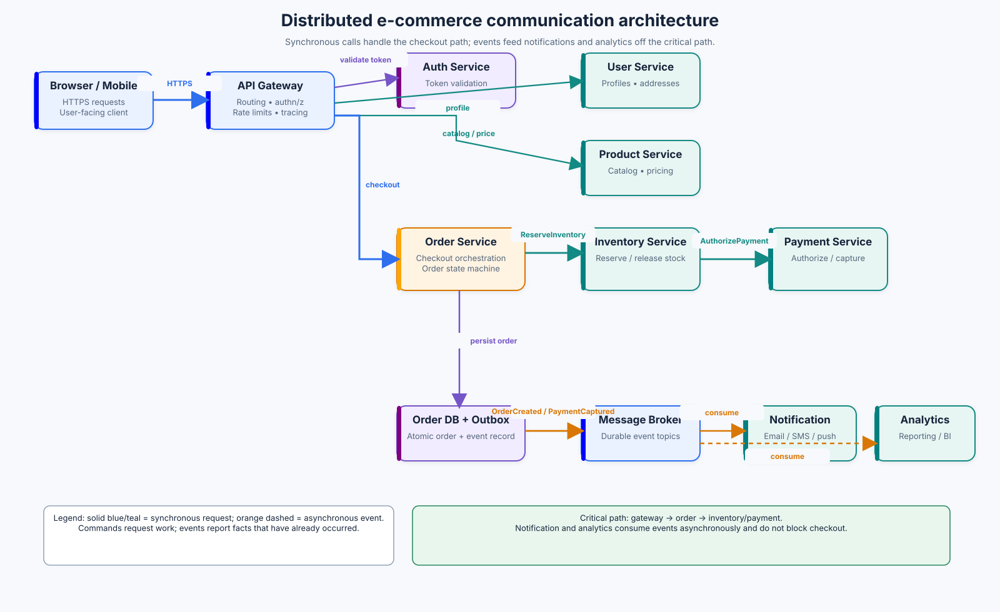
Diagram specification: Draw a left-to-right
e-commerce architecture with Browser/Mobile, API Gateway,
Authentication, User, Product, Order, Inventory, Payment, Notification,
Analytics, and a message broker. Use solid arrows for synchronous
REST/RPC request-response and dashed arrows for asynchronous event
publication/consumption. Label the inventory reservation and payment
authorization as commands, and
OrderCreated/PaymentCaptured as events. Show
an outbox attached to the Order database. Include direction arrows and a
legend distinguishing request, response, command, and event. The main
path should make clear that notifications and analytics do not sit on
the synchronous checkout critical path.
2. RPC — Remote Procedure Calls
2.1 RPC from first principles
A Remote Procedure Call (RPC) lets a client invoke a method implemented by another process using a programming-language interface that resembles a local method call. The abstraction hides some message encoding and transport details, but it cannot remove network failure semantics.
A local function call usually transfers control within one process and shares a memory model. A remote call crosses a process boundary, requires an addressable endpoint, serializes arguments, incurs variable latency, and can fail ambiguously. A server may finish the operation even when the client never receives the response.
RPC lifecycle
- Client code calls a generated or hand-written client stub.
- The stub encodes arguments and call metadata.
- The RPC runtime writes a request through a channel/connection.
- The server runtime dispatches the method.
- A server stub decodes the request and calls the implementation.
- The implementation executes application logic.
- The server encodes a result or error status.
- The client runtime decodes the response and returns a result or raises an exception.
Marshalling is converting arguments into a transportable representation; unmarshalling is reconstructing them at the receiving side. Stubs are generated or hand-written adapters that make the remote interface look like a local API.
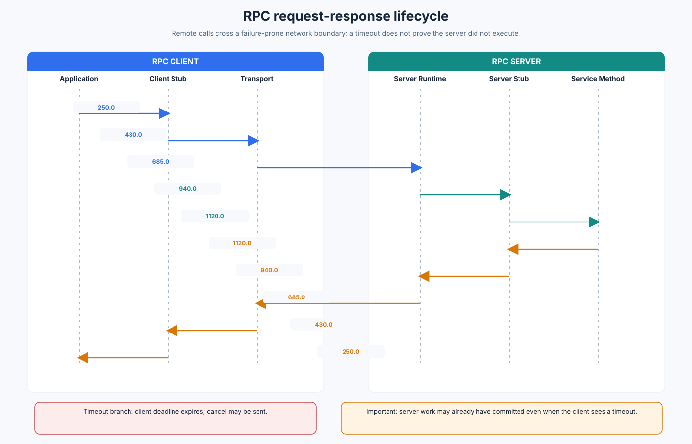
Diagram specification: Use two vertical swimlanes: RPC Client and RPC Server. Draw client method call → client stub → marshalling → transport request → server runtime/stub → unmarshalling → service method → response marshalling → transport response → client unmarshalling → return/exception. Show request ID, deadline, trace/correlation metadata, and status as annotations. Use a side branch for timeout/network failure and explicitly annotate that server execution may have completed even if the client sees a timeout.
2.2 RPC architecture and metadata
An RPC stack commonly contains:
- Service contract / IDL: methods, request types, response types, and error model.
- Client stub: generated API called by application code.
- Server handler: application implementation of contract methods.
- Serialization layer: maps typed messages to bytes.
- RPC runtime: framing, dispatch, status, streaming, and cancellation.
- Transport: usually HTTP/2 over TCP+TLS for gRPC, but other stacks exist.
- Connection/channel management: pooling, keepalive, DNS resolution, and load balancing.
Useful metadata includes:
- Request ID: unique identifier for one request attempt.
- Correlation ID: groups related requests in a larger workflow.
- Trace/span context: connects distributed traces across service boundaries.
- Deadline: latest time by which the caller is willing to wait.
- Authentication metadata: credentials or identity context, usually protected by TLS.
- Idempotency key: identifies one logical operation across retries.
Do not confuse a trace ID with an idempotency key. A trace ID is observability context; an idempotency key is part of correctness and must be persisted under a well-defined scope.
2.3 Why remote calls are not local calls
| Local call assumption | Remote reality |
|---|---|
| Very low and relatively stable latency | Network and queue latency vary |
| Call either returns or throws in-process | Caller may time out while server keeps executing |
| One process failure domain | Client, server, network, proxy, DNS, and infrastructure can fail independently |
| Arguments are shared references or copied by runtime | Values must be encoded and decoded |
| Usually no duplicate execution | Retry after uncertain response can execute a mutation twice |
| Debugger sees one stack | Distributed tracing is needed to reconstruct a cross-service path |
A good API makes timeouts, retryability, cancellation, and idempotency explicit. A caller should pass a remaining deadline instead of granting every downstream hop a fresh full timeout.
3. gRPC
3.1 What gRPC is
gRPC is an open-source, language-neutral RPC framework. A service is described in an interface definition (normally Protocol Buffers), code is generated for clients and servers, and RPC calls are carried over HTTP/2 in the standard gRPC protocol mapping. The framework supports unary and streaming method shapes, metadata, deadlines, cancellation, status codes, TLS credentials, and flow control.
It is useful for internal service-to-service APIs, high-volume typed APIs, and bidirectional streaming. It is not automatically the best public browser API: browser support generally uses gRPC-Web or a gateway/proxy, and REST/JSON is often easier for broad interoperability and human inspection.
3.2 Protocol Buffers service definition
Example inventory.proto:
syntax = "proto3";
package shop.inventory.v1;
service InventoryService {
rpc GetStock (GetStockRequest) returns (GetStockResponse);
rpc WatchStock (WatchStockRequest) returns (stream StockUpdate);
rpc UploadAdjustments (stream StockAdjustment) returns (UploadSummary);
rpc StockChat (stream StockCommand) returns (stream StockUpdate);
}
message GetStockRequest {
string sku = 1;
}
message GetStockResponse {
string sku = 1;
int32 available = 2;
string warehouse_id = 3;
}
message WatchStockRequest {
string sku = 1;
}
message StockUpdate {
string sku = 1;
int32 available = 2;
int64 sequence = 3;
}
message StockAdjustment {
string sku = 1;
int32 delta = 2;
string reason = 3;
}
message UploadSummary {
int32 accepted = 1;
int32 rejected = 2;
}
message StockCommand {
string sku = 1;
string command = 2;
}The numeric tags (1, 2, 3, …) identify fields on the wire. They are not array indexes and should not be renumbered or reused after deletion. Field numbers 1–15 use a one-byte tag for common wire types, so frequently present fields are often assigned low numbers.
Install the Python tooling and generate stubs:
python -m pip install grpcio grpcio-tools protobuf
python -m grpc_tools.protoc -I. --python_out=. --grpc_python_out=. inventory.protoGeneration creates inventory_pb2.py (message classes)
and inventory_pb2_grpc.py (service base classes and client
stubs).
3.3 Four RPC method shapes
| Shape | Client sends | Server sends | Example |
|---|---|---|---|
| Unary | One request | One response | Get product, validate address |
| Server streaming | One request | Stream of responses | Watch stock or telemetry |
| Client streaming | Stream of requests | One response | Upload a batch of adjustments |
| Bidirectional streaming | Stream | Stream | Interactive telemetry/control channel |
Ordering is preserved within an individual gRPC stream in each direction. This does not imply a global order across independent RPC calls or clients.
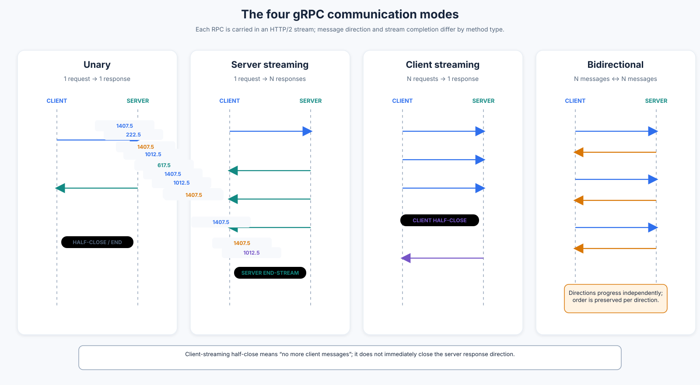
Diagram specification: Four side-by-side
mini-sequences, one for unary, server streaming, client streaming, and
bidirectional streaming. Use client and server lifelines; draw
individual messages and arrows. Label
1 request → 1 response,
1 request → N responses,
N requests → 1 response, and N ↔︎ N. Show
end-of-stream/half-close for client streaming and note that the two
directions of a bidi stream progress independently while preserving
per-direction message order.
3.4 HTTP/2 internals
HTTP/2 carries many logical streams over one connection. A stream is an independent bidirectional sequence of frames; frames from multiple streams can be interleaved. HTTP/2 uses binary framing and HPACK header compression. Flow control constrains how much data a sender may have in flight so a fast producer does not overwhelm a receiver.
The gRPC mapping places call metadata in HTTP/2 headers, serializes each message into a length-prefixed gRPC message, and carries the bytes in HTTP/2 DATA frames. Status and trailing metadata are returned in trailing headers. HTTP/2 frame boundaries are not the same thing as application message boundaries: one gRPC message may span HTTP/2 frames.
Multiplexing is not unlimited parallelism. A single TCP connection still experiences TCP-level head-of-line blocking when a packet is lost: later bytes on that connection cannot be delivered to HTTP/2 streams until the missing bytes are recovered. HTTP/3 uses QUIC streams over UDP to avoid this cross-stream transport blocking, but standard gRPC’s HTTP/2 transport should not be confused with HTTP/3 support in a particular language/runtime.
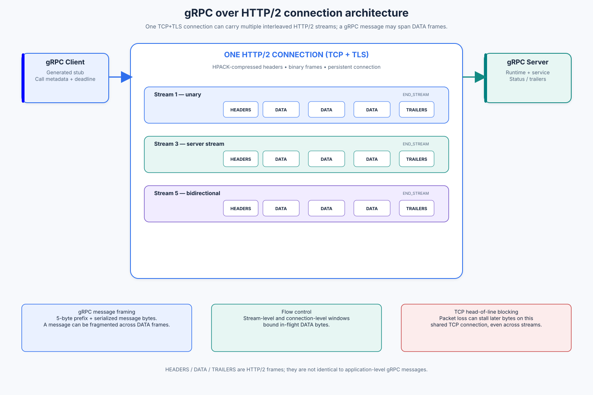
Diagram specification: Show a gRPC client and server over one HTTP/2 TCP+TLS connection. Inside the connection, draw multiple independent HTTP/2 streams with interleaved HEADERS and DATA frames. Show gRPC call headers/metadata, length-prefixed gRPC message payloads fragmented into HTTP/2 DATA frames, trailing status headers, HPACK header compression, connection-level and stream-level flow-control windows, and a single TCP retransmission blocking later bytes on the shared connection. Make it clear that one gRPC message is not necessarily one HTTP/2 frame.
Flow control and backpressure
Flow control applies to streaming RPCs. A successful
write() generally means the message was accepted by the
framework, not that the peer’s application has processed it. When the
receiver is slow, writes may block or await capacity. Manual flow
control must keep reads and writes progressing; both sides writing
synchronously without reading can deadlock.
Deadlines, cancellation, keepalive, and status
- Deadline: absolute limit on how long the caller is willing to wait for the RPC. Propagating remaining timeout rather than a raw wall-clock timestamp avoids clock-skew issues.
- Cancellation: tells the remote runtime that the caller no longer needs the result. Application code must cooperate and stop expensive work; cancellation does not roll back changes already committed.
- Status: gRPC returns a structured status. Common
values include
INVALID_ARGUMENT,NOT_FOUND,ALREADY_EXISTS,UNAUTHENTICATED,PERMISSION_DENIED,RESOURCE_EXHAUSTED,FAILED_PRECONDITION,ABORTED,UNAVAILABLE, andDEADLINE_EXCEEDED. - Interceptors: middleware hooks for logging, metrics, authentication, tracing, and policy enforcement.
- TLS/mTLS: TLS protects the channel; mutual TLS additionally authenticates the client certificate. Authentication and authorization are still separate decisions.
- Keepalive: HTTP/2 PINGs help detect broken or idle connections, but aggressive keepalive settings can burden servers and intermediaries.
- Health checking: gRPC health services expose service status; readiness should reflect whether the service can safely accept traffic, not merely whether its process is alive.
- Load balancing: clients may resolve multiple endpoints and balance calls; behavior depends on resolver and policy configuration. A long-lived HTTP/2 connection can make naive L4 balancing distribute connections, not individual RPCs.
3.5 Complete Python gRPC example
Project layout:
grpc_demo/
inventory.proto
inventory_pb2.py # generated
inventory_pb2_grpc.py # generated
server.py
client.pyserver.py:
from concurrent import futures
import time
import grpc
import inventory_pb2
import inventory_pb2_grpc
class Inventory(inventory_pb2_grpc.InventoryServiceServicer):
def __init__(self):
self.stock = {"SKU-1": 12, "SKU-2": 4}
def GetStock(self, request, context):
if request.sku not in self.stock:
context.abort(grpc.StatusCode.NOT_FOUND, "Unknown SKU")
return inventory_pb2.GetStockResponse(
sku=request.sku,
available=self.stock[request.sku],
warehouse_id="WH-IND-01",
)
def WatchStock(self, request, context):
if request.sku not in self.stock:
context.abort(grpc.StatusCode.NOT_FOUND, "Unknown SKU")
# Demonstration stream. A production implementation should subscribe
# to an update source and stop promptly on cancellation.
for sequence in range(1, 4):
if not context.is_active():
return
yield inventory_pb2.StockUpdate(
sku=request.sku,
available=self.stock[request.sku] - sequence,
sequence=sequence,
)
time.sleep(0.2)
def UploadAdjustments(self, request_iterator, context):
accepted = rejected = 0
for adjustment in request_iterator:
if adjustment.sku not in self.stock:
rejected += 1
continue
self.stock[adjustment.sku] += adjustment.delta
accepted += 1
return inventory_pb2.UploadSummary(accepted=accepted, rejected=rejected)
def serve():
server = grpc.server(futures.ThreadPoolExecutor(max_workers=10))
inventory_pb2_grpc.add_InventoryServiceServicer_to_server(Inventory(), server)
server.add_insecure_port("[::]:50051") # Use TLS in production.
server.start()
print("gRPC server listening on :50051")
server.wait_for_termination()
if __name__ == "__main__":
serve()client.py:
import grpc
import inventory_pb2
import inventory_pb2_grpc
def run():
with grpc.insecure_channel("localhost:50051") as channel: # TLS in production.
stub = inventory_pb2_grpc.InventoryServiceStub(channel)
# Unary call: explicit deadline limits resource occupancy.
stock = stub.GetStock(
inventory_pb2.GetStockRequest(sku="SKU-1"), timeout=2.0
)
print("Unary:", stock)
# Server streaming: iterate until the stream ends or is cancelled.
print("Stream:")
for update in stub.WatchStock(
inventory_pb2.WatchStockRequest(sku="SKU-1"), timeout=3.0
):
print(update.sequence, update.available)
# Client streaming: an iterator supplies messages to the server.
adjustments = iter([
inventory_pb2.StockAdjustment(sku="SKU-1", delta=2, reason="receipt"),
inventory_pb2.StockAdjustment(sku="SKU-2", delta=-1, reason="damage"),
])
summary = stub.UploadAdjustments(adjustments, timeout=2.0)
print("Upload:", summary)
if __name__ == "__main__":
run()Run python server.py in one terminal and
python client.py in another. The server above is a teaching
example: it keeps stock in process memory, uses an insecure channel, and
does not implement durable transactions, authentication, concurrency
control, or a real subscription mechanism. A production service should
use TLS/mTLS, bounded thread/async resources, database transactions,
health checks, structured status mapping, observability, and an explicit
shutdown strategy.
Important gRPC Python implementation notes
- For a server-streaming method, the handler is a generator that yields response messages.
context.abort(code, details)terminates the call with a structured status.timeout=on the client is an upper bound for that call; propagate remaining deadline to downstream calls.context.is_active()lets a handler notice cancellation/deadline expiry; long-running computation should check cancellation periodically.- Do not send credentials in ordinary metadata over an insecure channel.
- A server’s successful return is not proof that an external side effect is idempotent. Use application-level idempotency keys for mutation RPCs.
3.6 When gRPC fits
Good fit: internal typed APIs, polyglot microservices, streaming telemetry, low-latency service-to-service calls, strongly specified contracts, generated clients.
Less suitable without additional tooling: browser-native APIs, simple public endpoints intended for manual inspection, broad cache/CDN use, or APIs where clients need to construct arbitrary data selections. gRPC-Web, transcoding gateways, or REST façades can expose selected services externally.
4. Apache Thrift
4.1 What Thrift provides
Apache Thrift is a
cross-language RPC framework and serialization system. A
.thrift IDL declares data types and services; the compiler
generates language bindings. Unlike gRPC’s common HTTP/2+Protobuf
combination, Thrift allows different protocol encodings and transport
choices.
Core pieces include:
- IDL: structs, enums, exceptions, constants, and services.
- Generated code: client and server types for supported languages.
- Protocol: how values become bytes (Binary, Compact, JSON, etc.).
- Transport: how bytes are carried (buffered, framed, socket, etc.).
- Processor/server: dispatches incoming calls to implementation methods.
Example calculator.thrift:
namespace py calculator
struct AddRequest {
1: required i32 left
2: required i32 right
}
exception InvalidInput {
1: string message
}
service Calculator {
i32 add(1: AddRequest request)
throws (1: InvalidInput invalid)
}Generate Python code with a Thrift compiler installation:
The generated package contains service client/processor classes and data types. Exact import paths vary with compiler/runtime versions.
4.2 Protocols and transports
| Option | Characteristics | Trade-off |
|---|---|---|
| Binary Protocol | Compact typed binary representation | Efficient but not human-readable |
| Compact Protocol | Smaller encoding using compact integer representations | Good payload efficiency, harder to inspect manually |
| JSON Protocol | Textual representation | Easier to inspect/interoperate, typically larger |
| Buffered transport | Buffers writes/reads | Reduces small system calls; buffering policy matters |
| Framed transport | Prefixes messages/frames with length | Helps delineate messages and supports non-blocking servers |
| TCP socket transport | Streams bytes over TCP | Reliable ordered byte stream; framing belongs to higher layer |
Protocol and transport are separate choices: the protocol describes message encoding; transport describes byte movement and framing behavior.
4.3 Minimal Python client shape
A typical generated Python client uses a transport and protocol around a socket:
from thrift.transport import TSocket, TTransport
from thrift.protocol import TBinaryProtocol
from calculator import Calculator
from calculator.ttypes import AddRequest
transport = TSocket.TSocket("127.0.0.1", 9090)
transport = TTransport.TBufferedTransport(transport)
protocol = TBinaryProtocol.TBinaryProtocol(transport)
client = Calculator.Client(protocol)
try:
transport.open()
print(client.add(AddRequest(left=7, right=5)))
finally:
transport.close()A minimal generated server shape for the same IDL is:
from thrift.transport import TSocket, TTransport
from thrift.protocol import TBinaryProtocol
from thrift.server import TServer
from calculator import Calculator
from calculator.ttypes import InvalidInput
class CalculatorHandler:
def add(self, request):
if request.left < 0 or request.right < 0:
raise InvalidInput(message="inputs must be non-negative")
return request.left + request.right
handler = CalculatorHandler()
processor = Calculator.Processor(handler)
transport = TSocket.TServerSocket(host="0.0.0.0", port=9090)
tfactory = TTransport.TBufferedTransportFactory()
pfactory = TBinaryProtocol.TBinaryProtocolFactory()
server = TServer.TThreadPoolServer(processor, transport, tfactory, pfactory)
server.serve()These class names follow the standard Apache Thrift Python tutorial API; confirm the generated package layout and server class against the compiler/runtime version you install. The example is deliberately minimal and does not configure TLS, authentication, authorization, request deadlines, graceful shutdown, or bounded admission control. Follow the Apache Thrift Python tutorial for a compiler/runtime-matched scaffold.
4.4 Thrift strengths and trade-offs
Strengths include language interoperability, explicit contracts, generated data structures, and protocol/transport flexibility. Costs include compiler/runtime version management, a less uniform ecosystem than HTTP/JSON in browser-facing scenarios, and operational complexity when teams choose incompatible protocol/transport combinations.
4.5 gRPC vs. Thrift
| Feature | gRPC | Apache Thrift |
|---|---|---|
| IDL | Protocol Buffers by default | Thrift IDL |
| Serialization | Protobuf by default | Binary, Compact, JSON and others |
| Common transport | HTTP/2 | Configurable transport, often TCP |
| Streaming | Four first-class method shapes in common APIs | Depends on implementation/runtime and service design; not identical to gRPC streaming semantics |
| Code generation | protoc plus gRPC plugin |
Thrift compiler |
| Language support | Broad, documented language ecosystem | Broad multi-language ecosystem |
| Browser path | gRPC-Web or gateway commonly used | Usually a gateway or custom browser-facing API |
| Error model | Standard gRPC status codes | Thrift exceptions and application-specific error mapping |
| Best known fit | Typed RPC with HTTP/2 and stream support | Cross-language RPC with protocol/transport choice |
| Performance | Depends on message size, runtime, network, and workload | Same; benchmark representative workloads |
No universal speed ranking is valid. Benchmark serialization, payload size, concurrency, connection reuse, and tail latency in the target environment.
| # 5. REST APIs |
| ## 5.1 REST is an architectural style, not a synonym for JSON over HTTP |
| Representational State Transfer (REST) is an architectural style for distributed hypermedia systems, described by Roy Fielding. It is defined by constraints, not simply by a URL convention. The constraints are client-server separation, stateless interaction, cacheability, a uniform interface, a layered system, and optional code-on-demand. |
A resource is a conceptual thing identified by a
URI, such as /orders/ord_123. A
representation is a transferable description of the
resource state, such as JSON, HTML, or another media type. A client
operates on representations through a uniform interface rather than
invoking server implementation functions directly. |
| ### REST constraints and their effects |
| | Constraint | Meaning | Architectural benefit / cost | |—|—|—| | Client-server | UI and data/service concerns are separated | Independent evolution; more explicit boundaries | | Stateless | Each request contains the context needed to understand it; server does not rely on conversational session state for request semantics | Easier horizontal scaling and failover; repeated context may add bytes | | Cacheable | Responses declare whether and how they may be cached | Lower latency and origin load; stale-data and invalidation policy matter | | Uniform interface | Resource identification, manipulation through representations, self-descriptive messages, and hypermedia as the engine of application state (HATEOAS) | Decouples clients from server internals; strict hypermedia usage is often underimplemented in typical APIs | | Layered system | A client need not know whether it talks to the origin, gateway, proxy, or cache | Intermediaries improve security, caching, routing; layers can add latency and obscure failures | | Code-on-demand (optional) | Server may transfer executable code to extend client behavior | Flexibility, but executable content raises security and visibility concerns | |
| A stateless REST API may still persist user data, authenticate users, and use databases. Statelessness means the server does not require hidden per-client conversational context to interpret each request. A bearer token or resource identifier can carry explicit request context. |
| ## 5.2 HTTP request/response model |
| An HTTP request contains a method, target URI, headers, and sometimes a body. A response contains a status code, headers, and optionally a body. |
| Example: |
http GET /v1/products/SKU-100 HTTP/1.1 Host: api.example.com Accept: application/json Authorization: Bearer <access-token> |
| ```http HTTP/1.1 200 OK Content-Type: application/json Cache-Control: private, max-age=30 ETag: “product-SKU-100-v7” |
| {“sku”:“SKU-100”,“name”:“Mechanical Keyboard”,“price”:4999} ``` |
| ### Methods, safety, and idempotency |
| - Safe means the method is defined as essentially read-only: the client does not request a state change. GET, HEAD, and OPTIONS are safe. - Idempotent means multiple identical requests have the same intended effect on server state as one request. GET, HEAD, PUT, DELETE, and OPTIONS are idempotent by HTTP semantics. - POST is not inherently idempotent. An application can make a particular POST operation idempotent using an idempotency key or a naturally unique resource identifier. - PATCH is not inherently idempotent; a particular patch operation may be idempotent depending on its semantics. |
| | Method | Typical intent | Safe? | Idempotent? | |—|—|—:|—:| | GET | Retrieve a representation | Yes | Yes | | HEAD | Retrieve headers/metadata | Yes | Yes | | POST | Create/process/submit | No | No, by default | | PUT | Replace state at a known URI | No | Yes | | PATCH | Apply partial modification | No | Not necessarily | | DELETE | Remove resource association/state | No | Yes | | OPTIONS | Discover communication options | Yes | Yes | |
Idempotent does not mean every response is identical. The first
DELETE may return 204, while a repeated DELETE may return
404; the intended server state is nevertheless the same
(resource absent). See RFC 9110 for
normative HTTP semantics. |
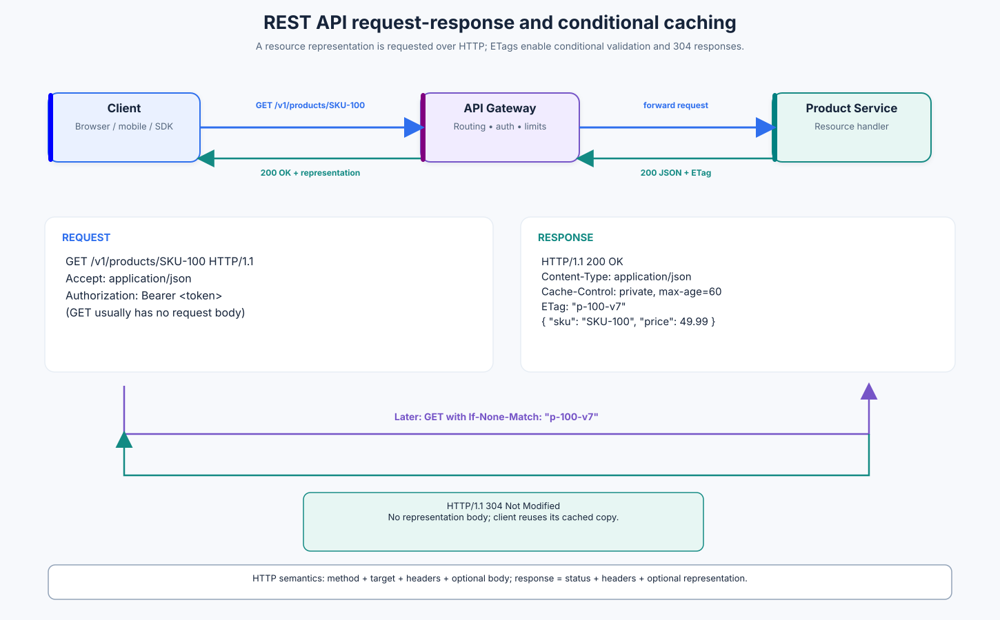 |
Diagram specification: Draw a client sending
GET /v1/products/SKU-100 with Accept and
Authorization headers to an API gateway, then a product
service, followed by a JSON response with status,
Content-Type, Cache-Control, and
ETag. Add a second conditional request using
If-None-Match and a 304 Not Modified response.
Include method, URI, headers, optional body, status, and representation
labels. |
| ### Common status-code families |
| Code/range | Meaning | Typical use | |—|—|—| | 2xx | Request
succeeded | 200 OK, 201 Created,
202 Accepted, 204 No Content | | 3xx |
Redirection/conditional handling | 301, 302,
304 Not Modified | | 4xx | Client/request problem |
400, 401, 403, 404,
409, 412, 422, 429 |
| 5xx | Server or upstream failure | 500, 502,
503, 504 | |
| A practical mapping: |
- 400 Bad Request: malformed request syntax or invalid
request structure. - 401 Unauthorized: missing/invalid
authentication credentials (despite the historical name). -
403 Forbidden: caller is authenticated but not permitted. -
404 Not Found: no visible resource at the target URI. -
409 Conflict: request conflicts with current resource
state, such as duplicate unique key. -
412 Precondition Failed: an HTTP conditional header such as
If-Match did not pass. -
422 Unprocessable Content: syntactically valid content
fails application validation (commonly used by frameworks). -
429 Too Many Requests: rate limit exceeded;
Retry-After may provide guidance. -
502 Bad Gateway: gateway received an invalid upstream
response. - 503 Service Unavailable: temporary service
incapacity; may include Retry-After. -
504 Gateway Timeout: gateway did not receive timely
upstream response. |
| ## 5.3 HTTP versions and connection behavior |
| | Version | Transport | Key properties | Important limitations | |—|—|—|—| | HTTP/1.1 | TCP | Persistent connections, textual syntax, chunked transfer; pipelining defined but rarely used widely | Multiple parallel requests often use multiple connections; application-level head-of-line effects | | HTTP/2 | TCP | Binary frames, multiplexed streams, header compression, flow control | TCP loss can stall all streams on the connection | | HTTP/3 | QUIC over UDP | Independent QUIC streams, integrated TLS 1.3 handshake, connection migration support | Requires compatible network/client/server/proxy stack; operational behavior differs from TCP | |
| HTTP/2 multiplexes exchanges over streams, but still shares one TCP byte stream. HTTP/3’s use of QUIC avoids TCP-level cross-stream head-of-line blocking, though congestion control and network capacity remain shared constraints. |
| ## 5.4 Resource-oriented API design |
| Prefer nouns representing resources and HTTP methods representing operations: |
text GET /v1/products?category=keyboards&limit=20 GET /v1/products/SKU-100 POST /v1/orders GET /v1/orders/ord_123 PUT /v1/users/usr_10/preferences PATCH /v1/orders/ord_123/shipping-address DELETE /v1/carts/cart_55/items/SKU-100 |
| Avoid action-heavy RPC-like paths when resource semantics are clearer: |
| ```text # Less resource-oriented POST /createNewOrder GET /getProductById?id=SKU-100 POST /deleteCartItem |
| # Better resource-oriented form POST /orders GET /products/SKU-100 DELETE /carts/cart_55/items/SKU-100 ``` |
Some domain commands do not map cleanly to CRUD. In that case, a
command subresource can be explicit,
e.g. POST /orders/ord_123/cancellations, provided the
meaning and idempotency policy are documented. |
| ### Filtering, sorting, and pagination |
- Filtering:
GET /products?category=audio&min_price=1000 - Sorting:
GET /products?sort=-created_at,name - Offset pagination:
?limit=50&offset=100. Easy to understand, but deep
offsets can be expensive and concurrent inserts/deletes can shift pages.
- Cursor/keyset pagination:
?limit=50&after=eyJjcmVhdGVkX2F0Ijoi.... A cursor
encodes the last-seen stable sort key (often
(created_at, id)) and is usually more stable and efficient
for large collections. |
| Always impose a maximum page size. A cursor should be opaque, validated, and bound to the query/filter context where necessary. Do not promise a stable snapshot across pages unless the API actually maintains one. |
| ### Versioning and compatibility |
Common strategies include versioned URI paths (/v1),
media-type versioning, and additive evolution. A version prefix is
operationally clear but does not excuse breaking changes within that
version. Prefer additive optional fields, tolerant readers, deprecation
windows, and published migration plans. Include versioning in generated
OpenAPI schemas and contract tests. |
| ### Conditional requests and caching |
- ETag identifies a representation version; clients can
send If-None-Match to revalidate and receive
304 Not Modified. - If-Match can implement
optimistic concurrency: update only if the resource still has the
version the client read; otherwise return 412. -
Cache-Control determines cacheability and freshness;
private, public, max-age,
no-store, and no-cache have different
meanings. - Vary indicates which request headers influence
representation selection. |
| Do not cache personalized responses in shared caches unless cache directives and cache keys are carefully designed. HTTP caching semantics are specified in RFC 9111. |
| ### Error response design |
| Use a consistent machine-readable error envelope. For example: |
json { "type": "https://api.example.com/problems/insufficient-stock", "title": "Insufficient stock", "status": 409, "detail": "Only 2 units are currently available.", "instance": "/v1/orders", "code": "INVENTORY_INSUFFICIENT", "trace_id": "01J..." } |
Never include stack traces, credentials, internal hostnames, SQL
text, or sensitive data in public error messages. Keep a stable
machine-readable code separate from human-readable
prose. |
| ### Authentication, authorization, and rate limiting |
Authentication establishes who the caller is; authorization
determines what the caller may do. Use TLS, short-lived credentials,
server-side validation, least privilege, and explicit resource-level
authorization. Rate limits may be applied per IP, user, API key, tenant,
or route. A 429 should be observable and may include
Retry-After; clients still need bounded retry
behavior. |
| ## 5.5 Complete FastAPI e-commerce CRUD example |
| Install: |
bash python -m pip install fastapi uvicorn pydantic |
main.py: |
| ```python from typing import Annotated from fastapi import FastAPI, Header, HTTPException, Query, status from pydantic import BaseModel, Field |
| app = FastAPI(title=“Shop Product API”, version=“1.0.0”) |
| class ProductIn(BaseModel): name: str = Field(min_length=2, max_length=100) price_paise: int = Field(gt=0) category: str = Field(min_length=1, max_length=40) |
| class Product(ProductIn): id: int version: int = 1 |
| products: dict[int, Product] = {} next_id = 1 |
| @app.post(“/v1/products”, response_model=Product, status_code=status.HTTP_201_CREATED) def create_product(payload: ProductIn): global next_id product = Product(id=next_id, **payload.model_dump()) products[next_id] = product next_id += 1 return product |
| @app.get(“/v1/products”, response_model=list[Product]) def list_products( category: str | None = None, limit: Annotated[int, Query(ge=1, le=100)] = 20, offset: Annotated[int, Query(ge=0)] = 0, ): rows = list(products.values()) if category: rows = [p for p in rows if p.category == category] return rows[offset:offset + limit] |
| @app.get(“/v1/products/{product_id}”, response_model=Product) def get_product(product_id: int): product = products.get(product_id) if product is None: raise HTTPException(404, “Product not found”) return product |
| @app.put(“/v1/products/{product_id}”, response_model=Product) def replace_product(product_id: int, payload: ProductIn, if_match: Annotated[str | None, Header()] = None): old = products.get(product_id) if old is None: raise HTTPException(404, “Product not found”) expected = f’“{old.version}”’ if if_match is not None and if_match != expected: raise HTTPException(412, “Product version changed; read again”) updated = Product(id=product_id, version=old.version + 1, **payload.model_dump()) products[product_id] = updated return updated |
| @app.delete(“/v1/products/{product_id}”, status_code=204) def delete_product(product_id: int): if product_id not in products: raise HTTPException(404, “Product not found”) del products[product_id] return None ``` |
Run uvicorn main:app --reload. FastAPI exposes
OpenAPI-backed docs at /docs. This example demonstrates
routing, Pydantic validation, response models, pagination, and a
simplified version precondition. It is not durable or safe for
concurrent production use because its dictionary is in-memory and has no
authentication or database transaction. In production, move state to a
database, enforce uniqueness and optimistic concurrency there,
authenticate/authorize every operation, and use a real ETag
representation validator. |
| ### Authentication dependency sketch (RS256 JWT) |
| The CRUD example intentionally keeps business logic readable; a deployable API must verify identity and authorize each resource. A JWT signature alone is not enough: pin allowed algorithms, validate issuer and audience, verify expiration, and derive tenant/user identity from trusted claims rather than caller-supplied headers. |
| ```python import os import jwt from jwt import InvalidTokenError from fastapi import Depends, HTTPException, status from fastapi.security import HTTPBearer, HTTPAuthorizationCredentials |
| bearer = HTTPBearer(auto_error=True) |
| def current_principal( credentials: HTTPAuthorizationCredentials = Depends(bearer), ): try: claims = jwt.decode( credentials.credentials, os.environ[“JWT_PUBLIC_KEY”], algorithms=[“RS256”], audience=“shop-api”, issuer=“https://identity.example.com”, options={“require”: [“exp”, “sub”]}, ) except (InvalidTokenError, KeyError): raise HTTPException( status_code=status.HTTP_401_UNAUTHORIZED, detail=“Invalid access token”, headers={“WWW-Authenticate”: “Bearer”}, ) return {“subject”: claims[“sub”], “scopes”: claims.get(“scope”, ““).split()} ``` |
Attach principal: dict = Depends(current_principal) to
routes and perform resource-level authorization (for example, verify the
order belongs to the authenticated tenant). This validates a signed
access token; it does not implement login, key rotation/JWKS retrieval,
role management, or authorization policy. Install
PyJWT[crypto] and use a managed identity provider in
production. |
| ### Poorly designed vs. better APIs |
| Problematic design | Better design | Why | |—|—|—| |
GET /doPayment | POST /payments with
idempotency key | GET should be safe; payment changes state | |
GET /products?offset=1000000 without bounds | Cursor
pagination with max page size | Avoid unbounded scans and unstable pages
| | 200 OK with { "error": true } for every
failure | Correct HTTP status and stable error body | Intermediaries and
clients can use semantics | | Return password hash in user
representation | Explicit response model that excludes secrets | Prevent
accidental data leakage | | Update regardless of version |
If-Match or version field | Prevent lost updates | |
| ## 5.6 REST limitations |
| REST is resource-oriented. Some UIs need several related resources, creating multiple round trips or over-fetching. A product page might need product details, inventory, reviews, and recommendations. A client that downloads every field when it needs only three may over-fetch; a client that must call many endpoints to assemble one screen may under-fetch. GraphQL can let clients select fields, while a backend-for-frontend can aggregate a UI-specific response. Neither removes the need to optimize database and service calls. |
6. GraphQL
6.1 What GraphQL is
GraphQL is a query language for
APIs and a runtime for executing those queries against a typed schema.
The schema defines the graph of types and fields; clients select the
fields they want. Many deployments expose one HTTP endpoint (often
/graphql), but GraphQL is not synonymous with one URL or
one transport. Queries are usually read operations, mutations change
state, and subscriptions provide a server-to-client event stream through
a transport such as WebSocket or another supported mechanism.
GraphQL is useful when clients have different data needs, when UI screens traverse related data, or when a typed graph is valuable. It shifts some flexibility to clients, so servers must enforce authorization, query-cost limits, and predictable resolver behavior.
6.2 Schema Definition Language and types
A small e-commerce schema:
enum OrderStatus { PENDING PAID SHIPPED CANCELLED }
scalar DateTime
type Product {
id: ID!
name: String!
pricePaise: Int!
reviews(first: Int = 10, after: String): ReviewConnection!
}
type Review {
id: ID!
rating: Int!
body: String
author: User!
}
type User { id: ID!, displayName: String! }
type Order {
id: ID!
status: OrderStatus!
totalPaise: Int!
items: [OrderItem!]!
}
type OrderItem { product: Product!, quantity: Int! }
type Query {
product(id: ID!): Product
products(category: String, first: Int = 20, after: String): [Product!]!
order(id: ID!): Order
}
input CreateOrderInput {
productId: ID!
quantity: Int!
clientRequestId: ID!
}
type Mutation {
createOrder(input: CreateOrderInput!): Order!
cancelOrder(id: ID!): Order!
}
type Subscription {
orderStatusChanged(orderId: ID!): Order!
}! marks a non-null type. [Product!]! means
a non-null list whose elements are also non-null. GraphQL supports
built-in scalar types (Int, Float,
String, Boolean, ID) plus custom
scalars, object types, enums, interfaces, unions, input object types,
and directives.
Additional SDL constructs:
scalar DateTime
enum PaymentState { AUTHORIZED CAPTURED FAILED }
interface Node { id: ID! }
type Product implements Node { id: ID!, name: String! }
type Article implements Node { id: ID!, title: String! }
union SearchHit = Product | Article
type Query {
node(id: ID!): Node
search(text: String!): [SearchHit!]!
products(first: Int = 20): [Product!]!
}- A custom scalar such as
DateTimeneeds a defined parse/serialize contract; the name alone does not standardize its format. - An interface declares fields common to implementing object types.
- A union allows a field to return one of several object types; clients use inline fragments to select type-specific fields.
- An input object carries structured mutation/query arguments; input and output object types are distinct GraphQL concepts.
- Directives alter execution/validation behavior.
Common built-ins include
@skipand@include;@deprecateddocuments a field/enum value scheduled for removal. - Introspection exposes schema metadata to tools. Restrict production introspection only according to a documented threat model and tooling requirement; authorization and query-cost controls are still required.
6.3 Queries, mutations, subscriptions, variables, and fragments
A query asks for a selected graph:
query ProductPage($id: ID!) {
product(id: $id) {
id
name
pricePaise
reviews(first: 3) {
id
rating
body
author { displayName }
}
}
}Variables are sent separately from the query text:
A mutation requests a state change:
mutation PlaceOrder($input: CreateOrderInput!) {
createOrder(input: $input) { id status totalPaise }
}A fragment reuses a selection:
fragment ProductCard on Product {
id
name
pricePaise
}
query Catalog { products(first: 20) { ...ProductCard } }Subscriptions describe a stream of updates. A subscription’s reliability, replay support, ordering, and delivery semantics are determined by its transport and implementation; GraphQL syntax alone does not guarantee durable delivery.
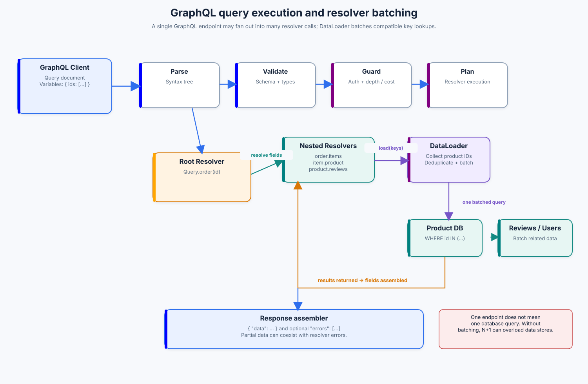
Diagram specification: Draw a GraphQL client request
with query document and variables entering one GraphQL endpoint. Show
parse → schema validation → authorization/query-cost checks → execution
plan → root resolver → nested field resolvers → DataLoader batch fetches
to product/review/user data sources → response assembly with both
data and optional errors. Use fan-out arrows
for nested resolvers and a batching arrow that combines many customer
IDs into one query. Annotate that the single endpoint can still cause
many downstream operations.
6.4 Execution and resolvers
The execution lifecycle is conceptually:
- Receive query document and variables.
- Parse the document into an AST.
- Validate it against the schema and operation rules.
- Apply authorization, complexity/depth policy, and persisted-query policy.
- Execute fields by invoking resolvers.
- Resolve nested selections, potentially in parallel where execution semantics permit.
- Assemble
dataand anyerrorsinto a response.
A resolver is a function that returns the value for
a field. A root resolver might fetch a product row, while the nested
reviews resolver fetches related reviews. If the parent
resolver returns an object already containing a field, a framework may
use a default field resolver.
GraphQL errors can coexist with partial data. Clients must inspect
both data and errors, and servers should avoid
leaking internal exceptions or database details.
6.5 N+1 query problem and optimization
Suppose a query requests 100 orders and each order’s customer. A naive resolver might issue one query for the orders and then one query per order for its customer: 1 + 100 database calls. This is the N+1 problem.
Mitigations:
- Batch related IDs into a single
WHERE id IN (...)query. - Use request-scoped DataLoader/batching with memoization.
- Eager-load relationships where appropriate.
- Enforce pagination and query depth/complexity limits.
- Apply field-level authorization and avoid loading protected data first.
- Monitor resolver-level latency and database query counts.
- Use persisted/allow-listed queries where query shape must be controlled.
DataLoader caches should generally be scoped to one request, especially when authorization or tenant-specific visibility is involved. A global cache can leak one user’s data to another if its key omits security context.
Request-scoped batching with Strawberry DataLoader
A DataLoader batches keys requested during one GraphQL execution and returns results in the same key order. The loader below illustrates the shape; use an async database driver and request-scoped context in a real resolver.
from strawberry.dataloader import DataLoader
PRODUCT_ROWS = {
"p1": {"id": "p1", "name": "Keyboard", "price_paise": 499900},
"p2": {"id": "p2", "name": "Mouse", "price_paise": 129900},
}
async def load_products(keys: list[str]):
# One batched DB query would normally use WHERE id IN (...).
return [PRODUCT_ROWS.get(key) for key in keys]
product_loader = DataLoader(load_fn=load_products)
# In a Strawberry resolver, use:
# async def product(self, info, id: strawberry.ID):
# return await info.context["product_loader"].load(str(id))
# Create a new DataLoader per request/context to avoid cross-user cache leaks.6.6 Python implementation with Strawberry
Install:
graphql_app.py:
from typing import Optional
import strawberry
from fastapi import FastAPI
from strawberry.fastapi import GraphQLRouter
PRODUCTS = {
"p1": {"id": "p1", "name": "Keyboard", "price_paise": 499900},
"p2": {"id": "p2", "name": "Mouse", "price_paise": 129900},
}
@strawberry.type
class Product:
id: strawberry.ID
name: str
price_paise: int
@strawberry.input
class CreateProductInput:
name: str
price_paise: int
@strawberry.type
class Query:
@strawberry.field
def product(self, id: strawberry.ID) -> Optional[Product]:
row = PRODUCTS.get(str(id))
return Product(**row) if row else None
@strawberry.field
def products(self) -> list[Product]:
return [Product(**row) for row in PRODUCTS.values()]
@strawberry.type
class Mutation:
@strawberry.mutation
def create_product(self, input: CreateProductInput) -> Product:
if input.price_paise <= 0:
raise ValueError("price_paise must be positive")
new_id = f"p{len(PRODUCTS) + 1}"
row = {"id": new_id, "name": input.name,
"price_paise": input.price_paise}
PRODUCTS[new_id] = row
return Product(**row)
schema = strawberry.Schema(query=Query, mutation=Mutation)
app = FastAPI()
app.include_router(GraphQLRouter(schema), prefix="/graphql")Run uvicorn graphql_app:app --reload. Example query:
Example mutation:
The resolver code above is deliberately small and in-memory. For production, integrate an async database session, request context, authentication, field-level authorization, DataLoader for relationship access, cursor pagination, complexity limits, and observability. Mutation-side idempotency still needs an explicit persistence strategy; GraphQL mutation syntax does not make a mutation safe to retry.
6.7 GraphQL strengths and limitations
Strengths: client-selected fields, typed schema, nested relationships, introspection/tooling, reduced client round trips, and a single graph contract across multiple backend sources.
Limitations: resolver N+1 queries, complex caching compared with simple REST GET endpoints, query-cost abuse, schema governance, partial-error handling, authorization at nested fields, and subscription infrastructure. A single endpoint can still trigger dozens of database queries and downstream RPCs.
7. RPC vs. REST vs. GraphQL
| Dimension | RPC / gRPC | REST / HTTP | GraphQL |
|---|---|---|---|
| Primary abstraction | Methods/procedures | Resources and representations | Typed graph and client-selected fields |
| Typical transport | gRPC over HTTP/2 | HTTP/1.1, HTTP/2, HTTP/3 | Commonly HTTP; subscriptions may use streaming transport |
| Payload | Usually Protobuf | Commonly JSON, can be other media types | Usually JSON response and query document |
| Contract | IDL and generated stubs | OpenAPI/schema conventions, HTTP semantics | GraphQL schema |
| Client flexibility | Method parameters/response types | Endpoint representations | High field-selection flexibility |
| Streaming | First-class in gRPC | SSE/WebSocket/chunked patterns added separately | Subscription semantics require a transport |
| Browser support | gRPC-Web/gateway often needed | Native | Native via HTTP client |
| Caching | Application/proxy-specific | Strong HTTP caching semantics for suitable methods | More deliberate query-aware caching/persisted queries |
| Versioning | Contract evolution rules | URI/media type/additive evolution | Usually additive schema evolution and deprecation |
| Strength | Typed internal calls, efficient streams | Simplicity, interoperability, cacheability | Flexible data graph for varied clients |
| Main operational risk | Temporal coupling, hidden retry ambiguity, long-lived connections | Contract drift, over/under-fetching, cache correctness | Resolver cost, query complexity, authorization, caching |
Selection guide
- Choose gRPC for internal, typed service calls or streaming where generated contracts and HTTP/2 are useful.
- Choose REST for public or broadly interoperable resource APIs, browser access, and HTTP caching semantics.
- Choose GraphQL when clients need different shapes of related data and the server can govern resolver cost and authorization.
- Combine them: a public GraphQL/REST gateway can call internal gRPC services and publish asynchronous events to a broker. The best architecture is often hybrid rather than dogmatic.
8. Message Passing vs. Shared Memory
8.1 Message passing
In message passing, processes communicate by sending discrete messages. The message is the unit of exchange, and the receiver interprets the payload. The message may travel directly over a socket or indirectly through a queue/topic broker.
Important design dimensions:
- Ownership: after sending, can the sender mutate or reuse its buffer? Most network APIs copy or serialize data; shared-memory queues require explicit ownership rules.
- Persistence: is the message held only in memory or durably stored?
- Acknowledgment: does it mean received, consumed, processed, or committed?
- Ordering: globally, per queue, per partition, per key, or not guaranteed?
- Backpressure: what happens when consumers are slower than producers?
- Failure recovery: can a consumer resume after restart, and can it replay messages?
Message passing encourages explicit boundaries and reduces shared-memory race conditions, but introduces encoding, network latency, and distributed failure handling.
8.2 Shared memory
Shared memory allows multiple processes on one host to map the same memory region. It can be very fast because processes exchange data without serializing through a remote network protocol. But coordination becomes the application’s responsibility:
- A mutex enforces exclusive access to a critical section.
- A semaphore represents a count of available permits/resources.
- An atomic operation updates a value indivisibly under the memory model.
- Memory visibility determines when writes by one thread/process become visible to another.
- Incorrect locking can cause races, deadlocks, starvation, or corruption.
A process should not assume that a shared-memory write automatically creates a safe handoff. Use synchronization primitives and ownership protocols.
Python example: message passing vs. shared memory
from multiprocessing import Process, Queue, shared_memory, Lock
import struct
def queue_worker(q: Queue):
value = q.get()
print("message received:", value)
def shared_worker(name: str, lock: Lock):
shm = shared_memory.SharedMemory(name=name)
try:
with lock:
value = struct.unpack("q", shm.buf[:8])[0]
print("shared value:", value)
finally:
shm.close()
if __name__ == "__main__":
q = Queue()
p = Process(target=queue_worker, args=(q,))
p.start()
q.put({"event": "OrderCreated", "order_id": "ord-1"})
p.join()
lock = Lock()
shm = shared_memory.SharedMemory(create=True, size=8)
try:
with lock:
shm.buf[:8] = struct.pack("q", 42)
p2 = Process(target=shared_worker, args=(shm.name, lock))
p2.start()
p2.join()
finally:
shm.close()
shm.unlink()The queue example transfers a Python object through a multiprocessing queue (which serializes its contents); shared memory exposes a byte buffer and requires the application to define a layout and synchronization. Production shared memory needs careful lifecycle management, crash recovery, versioning, and ownership. This code is intended for a local machine only.
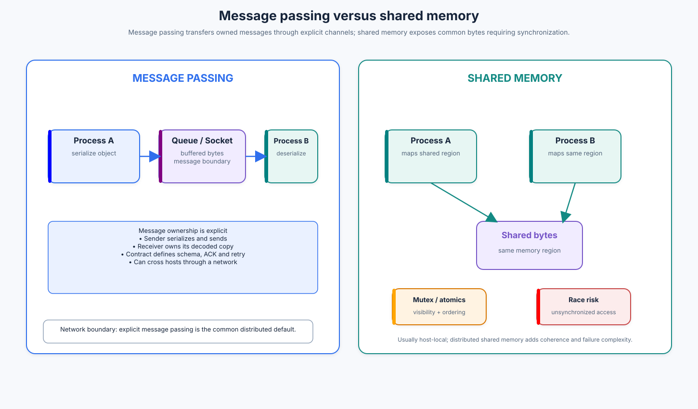
Diagram specification: Split the canvas into two panels. Left: Process A serializes a message and sends it through a queue/socket to Process B, which receives and deserializes it; label message ownership, copies, queue/buffer, and explicit contract. Right: two local processes map one shared-memory region; label shared bytes, mutex/atomic synchronization, and race-condition risk. Add a boundary note that shared memory is normally host-local while message passing can cross machines.
8.3 Comparison
| Dimension | Message passing | Shared memory |
|---|---|---|
| Coupling | Explicit message contract | Shared layout and synchronization contract |
| Scope | Same host or network | Usually same host |
| Copying | Serialization/copies may occur | Can avoid many copies |
| Performance | Network and encoding overhead | Very low-latency local exchange possible |
| Fault isolation | Process may fail without corrupting message contract (depending on persistence) | Incorrect writes can corrupt shared region |
| Scalability | Can add consumers/partitions with architecture support | Bound to shared-memory host and coordination design |
| Consistency | Message order/delivery and application state | Memory model, locks, atomics |
| Best use | Service boundaries, queues, event systems | High-performance local IPC and shared caches |
Distributed shared memory systems emulate a shared address space across machines, but must manage cache coherence, replication, latency, and partial failure. They do not erase the fundamental cost and uncertainty of remote access. Distributed applications therefore generally favor explicit message passing across machine boundaries.
9. Serialization and Deserialization
9.1 Why serialization exists
Objects in a process are laid out according to a language runtime: pointers, object headers, alignment, memory allocation, and type metadata. Those details are not a portable network contract. Serialization maps application data to a defined byte representation; deserialization reconstructs data from those bytes.
In-memory object
|
v
Validation / schema mapping
|
v
Serializer ----> bytes + optional schema/version metadata
|
v
Transport / broker / file
|
v
Deserializer <---- bytes + schema/version metadata
|
v
Application representationTrade-offs include payload size, encode/decode CPU, memory allocation, schema governance, readability, interoperability, and compatibility across versions. Binary is not automatically faster in every workload; a high-performance JSON parser may outperform a poorly configured binary implementation for some payloads. Benchmark representative messages.
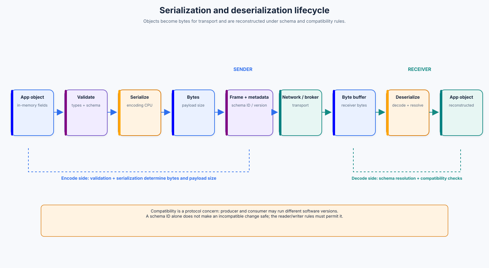
Diagram specification: Show an application object in memory flowing through schema validation and serializer into a byte payload. Add optional schema ID/version metadata, transport framing, network or broker, receiver byte buffer, deserializer, schema resolution, and the reconstructed application object. Label encoding CPU, payload size, and compatibility checks at the relevant stages.
9.2 Text vs. binary formats
| Property | Text-oriented | Binary-oriented |
|---|---|---|
| Examples | JSON, XML | Protobuf, Avro binary, MessagePack |
| Inspection | Easy with logs/tools | Requires decoder or schema |
| Numeric/type metadata | Often inferred from text/schema | Encoded as type tags/wire rules |
| Payload size | Often larger, though compression helps | Often smaller, not guaranteed |
| Schema evolution | Application-level conventions | Often explicit schema and compatibility rules |
| Debugging | Straightforward | Needs decoding tooling |
Compression can narrow size differences, but adds CPU and can complicate streaming and latency. Avoid logging full sensitive payloads merely because JSON is readable.
10. JSON
10.1 Data model and limitations
JSON supports objects, arrays, strings, numbers, booleans, and
null. It is language-neutral and widely supported, making
it a common public API and configuration format.
Important limitations:
- JSON has one number syntax; it does not express every language numeric type (e.g., decimal scale, 64-bit integer guarantees) in a portable typed way.
- Date/time, binary blobs, decimals, and domain-specific types need conventions (ISO 8601 strings, base64, integer minor currency units, etc.).
- JSON object keys are strings.
- Duplicate object keys are discouraged and parser handling can differ.
- A JSON document by itself does not provide a formal schema or compatibility policy.
For money, integer minor units (price_paise) or decimal
strings are often safer than binary floating-point values.
10.2 Python and JavaScript examples
Python:
import json
order = {
"event_id": "evt-1001",
"type": "OrderCreated",
"order_id": "ord-9",
"total_paise": 129900,
"items": [{"sku": "SKU-1", "quantity": 1}],
}
wire_text = json.dumps(order, separators=(",", ":"), sort_keys=True)
restored = json.loads(wire_text)
print(wire_text)
print(restored["order_id"])JavaScript:
const order = {
event_id: "evt-1001",
type: "OrderCreated",
order_id: "ord-9",
total_paise: 129900,
};
const wireText = JSON.stringify(order);
const restored = JSON.parse(wireText);
console.log(restored.order_id);Use explicit validation (Pydantic, JSON Schema, or another contract) after parsing untrusted JSON. Parsing proves syntactic validity, not business validity or authorization.
11. Protocol Buffers
11.1 What Protobuf provides
Protocol Buffers is a
language-neutral, platform-neutral, extensible mechanism for serializing
structured data. A .proto schema defines message fields and
numeric tags; generated code provides language-specific classes.
Protobuf is the default gRPC IDL and payload format, though gRPC can be
configured with alternatives in some environments.
Example:
syntax = "proto3";
message Order {
string order_id = 1;
int64 created_at_unix_ms = 2;
int64 total_paise = 3;
repeated OrderItem items = 4;
optional string coupon_code = 5;
}
message OrderItem {
string sku = 1;
int32 quantity = 2;
}
enum OrderState {
ORDER_STATE_UNSPECIFIED = 0;
ORDER_STATE_PENDING = 1;
ORDER_STATE_PAID = 2;
}
message OrderMetadata {
map<string, string> labels = 1;
oneof destination {
string pickup_point_id = 2;
string delivery_address_id = 3;
}
}repeated represents zero or more values;
map<K,V> represents a key/value collection;
enum assigns symbolic names to numeric values;
oneof expresses mutually exclusive alternatives. Message
nesting supports structured records. In proto3, implicit-presence scalar
fields may not distinguish an absent value from its default; use
optional, message presence, or an appropriate
oneof when the distinction is semantically important.
A field declaration has a type, name, and field number. The field number is part of the binary contract. Deleting a field should reserve its old number (and often its name) so it cannot be reused accidentally.
11.2 Wire format
Protobuf’s wire format is tag-oriented. A tag combines the field number and wire type:
Common wire types:
| Wire type | Meaning | Typical values |
|---|---|---|
| 0 | Varint | int32, int64, uint, bool, enum |
| 1 | 64-bit | fixed64, sfixed64, double |
| 2 | Length-delimited | string, bytes, embedded message, packed repeated scalar |
| 5 | 32-bit | fixed32, sfixed32, float |
A varint encodes an integer in seven-bit groups; the high bit of each
byte indicates whether more bytes follow. Small non-negative integers
therefore take fewer bytes. Signed negative integer fields may take more
bytes with ordinary int32/int64;
sint32/sint64 use ZigZag encoding to represent
small-magnitude negatives efficiently.
Worked tag/varint example
For field number 1 with wire type 2 (length-delimited), the tag is
(1 << 3) | 2 = 10, or byte 0x0A. If the
string is "abc", its encoded payload is length byte
0x03 followed by UTF-8 bytes 61 62 63. The
field bytes are therefore:
0A 03 61 62 63
| | +-------- UTF-8 bytes for "abc"
| +----------- payload length: 3
+-------------- tag: field 1, wire type 2This is a teaching example of a single string field. Real messages contain multiple tags and may use packed repeated values, nested messages, and presence semantics.
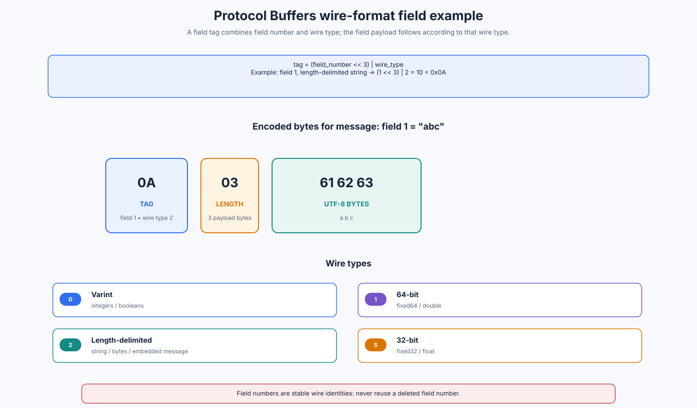
Diagram specification: Visualize a Protobuf field as
tag + payload. Include formula
tag = (field_number << 3) | wire_type, an example
field 1/string (tag 0x0A), length byte 0x03,
and UTF-8 payload bytes 61 62 63. Include a small legend
for varint, 64-bit, length-delimited, and 32-bit wire types. Annotate
that field numbers are stable wire identities and must not be
reused.
11.3 Schema evolution rules
Common safe practices:
- Add a new field with a new field number; give it semantics that old readers can safely ignore.
- Remove a field only after compatibility planning; reserve its number and name.
- Never reuse a deleted field number.
- Do not change a field’s type merely because the source language type appears compatible; wire-type compatibility and semantic compatibility are distinct.
- Adding enum values is usually safe for tolerant readers, but old application code must handle unknown enum values safely.
- Use explicit presence when the difference between absent and default value matters.
- Preserve
oneofsemantics and avoid changes that make old and new code interpret the same bytes differently.
Example schema evolution:
// v1
message Customer {
string id = 1;
string name = 2;
}
// v2: additive optional field
message Customer {
string id = 1;
string name = 2;
optional string preferred_language = 3;
}
// v3: old phone field removed only after migration; number is reserved
message Customer {
reserved 4;
reserved "legacy_phone";
string id = 1;
string name = 2;
optional string preferred_language = 3;
}Unknown fields allow newer messages to be parsed by older code without understanding the field, but intermediate systems that parse and reconstruct messages should be tested to ensure the generated runtime preserves unknown fields in the intended language/runtime path.
11.4 Python example
Install protobuf and the compiler tooling, define
order.proto, generate Python code, then use generated
classes:
python -m pip install protobuf grpcio-tools
python -m grpc_tools.protoc -I. --python_out=. order.protoimport order_pb2
order = order_pb2.Order(
order_id="ord-9",
created_at_unix_ms=1793900000000,
total_paise=129900,
)
order.items.add(sku="SKU-1", quantity=1)
wire_bytes = order.SerializeToString()
reloaded = order_pb2.Order()
reloaded.ParseFromString(wire_bytes)
print(reloaded)Generated code must be compiled from the schema version used by that
deployment. Protobuf is a data format, not a schema registry or a
deployment compatibility process. Keep .proto files in
source control and run compatibility checks in CI.
12. Apache Avro
12.1 Why Avro exists
Apache Avro is a data serialization system with a schema model commonly used in data pipelines and event streaming. Avro’s binary encoding is compact; the writer schema is required to interpret the bytes. A reader may use a different schema, and Avro’s schema-resolution rules determine how the writer’s data maps to the reader’s expected shape.
Avro schemas are commonly expressed in JSON. Its type system includes null, boolean, int, long, float, double, bytes, string, records, enums, arrays, maps, unions, and fixed-size values.
12.2 Writer schema and reader schema
- Writer schema: describes the record as it was encoded.
- Reader schema: describes the structure the consumer wants to read.
- Resolution: matches names/types and applies permitted promotions/defaults according to the Avro specification.
Example writer schema v1:
{
"type": "record",
"name": "OrderEvent",
"namespace": "com.example.events",
"fields": [
{"name": "order_id", "type": "string"},
{"name": "total_paise", "type": "long"}
]
}Reader schema v2 adds a field with a default:
{
"type": "record",
"name": "OrderEvent",
"namespace": "com.example.events",
"fields": [
{"name": "order_id", "type": "string"},
{"name": "total_paise", "type": "long"},
{"name": "currency", "type": "string", "default": "INR"}
]
}When a v2 reader reads v1 data, it can use the default for
currency. When a v1 reader reads v2 data, the additional
writer field can be ignored under Avro resolution rules, provided the
other schema requirements match. A default matters for reader-schema
resolution when a writer record lacks a field expected by the
reader.
12.3 Python example with fastavro
Install:
from io import BytesIO
from fastavro import parse_schema, writer, reader
schema = parse_schema({
"type": "record",
"name": "OrderEvent",
"fields": [
{"name": "order_id", "type": "string"},
{"name": "total_paise", "type": "long"},
{"name": "currency", "type": "string", "default": "INR"},
],
})
buffer = BytesIO()
writer(buffer, schema, [{
"order_id": "ord-9", "total_paise": 129900, "currency": "INR"
}])
buffer.seek(0)
print(list(reader(buffer)))For Kafka, Avro is often paired with a schema registry that stores schema definitions and IDs. The registry is a deployment/governance service; Avro itself defines encoding and schema resolution. Configure compatibility policy deliberately (backward, forward, full, and transitive variants have registry-specific operational meanings).
13. MessagePack
MessagePack is a compact binary serialization format with a data model similar to JSON. It encodes objects, arrays, strings, binary blobs, numbers, booleans, and nil using a byte-oriented format. It does not require a central schema to parse basic values, although applications still need a contract to interpret the meaning and evolution of fields.
Python example:
import msgpack
payload = {
"event_id": "evt-42",
"type": "OrderCreated",
"total_paise": 129900,
"items": [{"sku": "SKU-1", "quantity": 1}],
}
wire = msgpack.packb(payload, use_bin_type=True)
restored = msgpack.unpackb(wire, raw=False)
print(len(wire), restored["event_id"])MessagePack is useful where a JSON-like model is desired with more compact binary encoding. Compared with Protobuf/Avro, it generally does not provide the same schema-driven generated-code workflow and compatibility governance by itself. The encoding is compact, but the application still needs versioned contracts and validation.
13.1 Serialization comparison
| Feature | JSON | Protobuf | Avro | MessagePack |
|---|---|---|---|---|
| Representation | Text | Tagged binary | Schema-based binary (also JSON encoding) | Binary JSON-like |
| Human-readable | Yes | No, requires decoding | Schema + decoder needed | Requires decoder |
| Formal schema | External/optional | .proto |
Avro schema | Not required by format |
| Field identity | Property name | Numeric field tag | Field name/schema | Map key or positional array |
| Schema evolution | Convention/validation | Field-number and wire rules | Writer/reader resolution | Application-defined contract |
| Payload size | Often larger | Often compact | Compact | Compact |
| Language support | Very broad | Very broad | Broad ecosystem | Broad ecosystem |
| Typical use | Public APIs, config, logs | RPC and typed service messages | Data pipelines and event streams | Compact dynamic messages |
| Main risk | Ambiguous numeric/time conventions | Breaking tag/type changes | Schema registry and resolution discipline | Weakly governed meaning/versioning |
No format is always best. Choose based on clients, schema governance, tooling, payloads, evolution, and measured CPU/latency. Compression and batching can materially change results.
| # 14. Schema Evolution and Compatibility |
| ## 14.1 Why schema evolution is unavoidable |
| A distributed deployment rarely upgrades every process at the same instant. During a rolling deployment, old and new producers and consumers coexist. Messages can remain in a broker for hours or days; a replay may deliver an event created by an older application version to a newer consumer. A schema that is safe for a single compiled program may be unsafe when multiple versions run simultaneously. |
| A robust event contract needs to support at least these combinations: |
| | Producer / writer | Consumer / reader | Question | |—|—|—| | Old | New | Can the new consumer read data produced by the old service? | | New | Old | Can the old consumer safely ignore or interpret new data? | | New v2 | New v3 | Can rolling deployments overlap? | | Historical writer | Current reader | Can replay/backfill read retained events? | |
| ## 14.2 Compatibility directions |
| - Backward compatibility: a newer reader can read data written with an older schema. - Forward compatibility: an older reader can read data written with a newer schema. - Full compatibility: both directions hold for the relevant pair of versions. - Transitive compatibility: the policy is checked against more than the immediately previous schema, often all prior versions depending on registry policy. |
| These terms are used by schema registries and formats with slightly different policy details. Always consult the registry’s exact compatibility semantics and test actual serializer/deserializer behavior. |
| ## 14.3 Evolution rules by format |
| | Change | JSON with contract | Protobuf | Avro | |—|—|—|—| | Add optional field | Usually safe if readers tolerate unknown fields | Usually safe with new tag and compatible presence/default behavior | Usually safe when reader default allows older writer data; check writer/reader direction | | Remove field | Risky if consumers require it; keep during migration | Reserve tag and name; old/new readers need a plan | Reader may ignore writer field; reader requiring removed field may need default | | Rename field | Breaking for name-based JSON clients unless alias/migration | Wire-safe if tag stays, but generated source APIs change | Name resolution/aliases matter; use schema aliases deliberately | | Change type | Usually breaking or ambiguous | May be wire-compatible but semantically lossy/unsafe | Must satisfy schema resolution/promotion rules | | Add enum value | Old consumers need unknown-value behavior | Often wire-safe; application code must tolerate unknown numeric enum | Reader enum resolution must support symbol or default | | Change meaning without changing shape | Syntactically compatible but semantically dangerous | Same | Same | |
Never judge compatibility only by whether a parser accepts the
bytes. Semantic changes (e.g., changing total from rupees
to paise) can be more dangerous than parse errors. |
| ## 14.4 Order Service event evolution scenario |
| Suppose Order Service emits: |
json {"event_id":"e1","type":"OrderCreated","order_id":"o1","total_paise":129900} |
Inventory consumes order_id and lines; Payment consumes
order_id and total_paise; Analytics consumes
all current fields; Notification consumes order_id and
customer email. |
Version 2 adds currency: |
json {"event_id":"e2","type":"OrderCreated","order_id":"o2","total_paise":129900,"currency":"INR"} |
| The rollout sequence should be: |
1. Deploy consumers that accept both old and new forms. For the new
field, define a safe fallback or default where the domain permits it. 2.
Verify that all active consumer groups can parse and safely handle the
new shape. 3. Deploy the producer that begins emitting
currency. 4. Monitor deserialization errors, dead-letter
volume, and consumer behavior. 5. Only after the retention/replay window
and migration policy permit it, remove obsolete compatibility code or
fields. |
| A safe default is a domain decision, not just a compiler setting. If currency cannot be inferred safely, reject or quarantine the event rather than silently treating unknown amounts as INR. |
| ### Contract and rollout practices |
- Keep IDL/schema files versioned with producer code. - Run
compatibility checks in CI against the actual deployed baseline. - Use
consumer-driven contract tests for important consumer expectations. -
Deploy tolerant consumers before producers that emit new fields. - Use
expand-and-contract migrations: add new field/path, dual-read or
dual-write if needed, migrate, then remove old field. - Include
event_id, event type/version, schema ID where applicable,
producer/service, tenant/security context where justified, and
occurrence timestamp. Avoid using a timestamp as a unique ID. - Treat
unknown fields and unknown enum variants as expected inputs where the
format allows them. - Keep sensitive data out of long-lived event
payloads unless retention and privacy requirements are understood. |
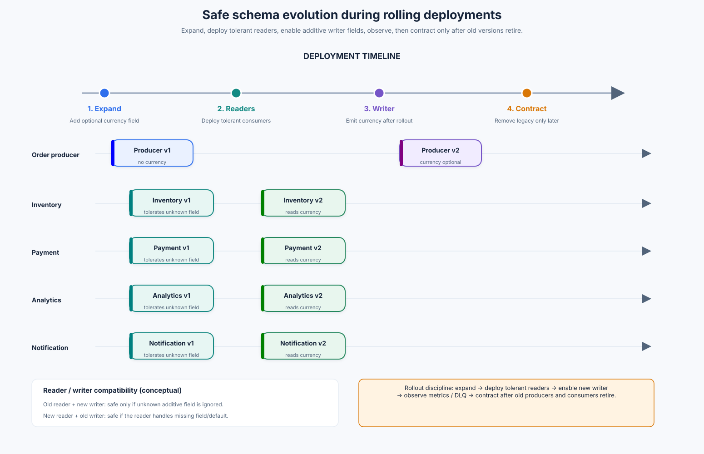 |
Diagram specification: Depict Order Service v1, v2,
and v3 producers on a horizontal deployment timeline and Inventory,
Payment, Analytics, and Notification consumer versions on parallel
lanes. Show v1 events continuing to be consumed while v2 consumers are
rolled out, followed by v2 producer emission of the additive
currency field. Add a compatibility matrix panel for
old-reader/new-writer and new-reader/old-writer. Annotate expand →
deploy tolerant readers → enable new writer → observe → contract. Show a
dead-letter/quarantine path for semantically invalid messages. |
15. Message Delivery Semantics
15.1 Delivery is not the same as processing
A message pipeline has several distinct milestones:
- Producer application created an event.
- Producer library accepted it into a local buffer.
- Broker received it.
- Broker persisted it (possibly replicated to a required number of replicas).
- Consumer fetched/delivered it.
- Consumer business logic completed.
- Consumer’s database transaction committed.
- Consumer acknowledgment or offset commit was recorded.
A guarantee at one milestone does not automatically imply a guarantee at the next. For example, an acknowledgment may be sent before a database commit (risking loss after crash) or after commit (risking duplicate delivery if the ack is lost).
15.2 At-most-once
At-most-once processing attempts each message zero or one times. A common implementation acknowledges or advances the consumer position before processing, or does not retry after a failed attempt.
Timeline:
Broker Consumer
| -- M1 ---------> |
| <--- ACK --------| (ack/offset committed first)
| X crash before business commit
| |
| | restart after committed offset
| | M1 is not delivered againThe message is lost from the application’s perspective. The benefit is no duplicate processing under the chosen protocol, but the cost is possible loss. This may be acceptable for best-effort telemetry, sampled metrics, or ephemeral signals where loss is preferable to duplicate side effects.
15.3 At-least-once
At-least-once aims to ensure that a message is eventually processed one or more times, assuming eventual recovery, retention, and successful retries. The consumer acknowledges only after its work completes.
Broker Consumer Database
| -- M1 ---------> |
| | ---- write ------>|
| |<--- COMMIT -------|
| X crash before ACK
| |
| -- M1 redelivered |
| | ---- write again ->| duplicate unless idempotent
| <--- ACK --------|The broker cannot know whether the consumer’s business transaction committed before the consumer crashed unless both participate in a shared atomic protocol. Therefore duplicates are expected and consumers must be idempotent or deduplicate by a stable event ID.
15.4 Exactly-once: define the boundary
The phrase exactly once is incomplete without specifying what happens exactly once, where, and under which failure model.
- Exactly-once delivery is generally not a useful end-to-end promise in a system that can lose acknowledgments and retry.
- Exactly-once processing effect can be achieved within a transactional boundary by atomically recording message identity and applying the state change.
- Exactly-once stream processing may mean consuming input offsets, computing state, and writing output records atomically within a stream-processing platform.
- Exactly-once external side effects (charge a payment provider, send an email, call a third-party API) need cooperation from the external system or a reconciliation design. A local broker transaction cannot atomically commit a remote payment gateway action.
Transactional inbox / idempotent consumer
A database transaction can atomically insert an event ID into an inbox table and update business state. A unique constraint rejects repeats:
BEGIN;
INSERT INTO processed_messages (consumer_name, event_id)
VALUES ('inventory-v1', 'evt-123');
-- If the unique key already exists, skip the effect.
UPDATE inventory SET available = available - 1 WHERE sku = 'SKU-1';
COMMIT;The dedupe insert and business update must be in the same database transaction. If they are separate, a crash between them creates either duplicate effects or skipped effects.
Transactional outbox
The dual-write problem occurs when a service updates its database and separately publishes an event. If the DB commit succeeds but publishing fails, downstream services never learn of the change. If publishing occurs first and the DB transaction later rolls back, downstream systems observe a fact that never committed.
The transactional outbox writes the domain change and an outbox row in the same local DB transaction. A relay later publishes outbox rows. The relay may publish more than once, so consumers remain idempotent. This pattern creates atomicity between local state and the intent to publish, not magical end-to-end exactly-once delivery. See AWS Prescriptive Guidance on the transactional outbox for a concrete implementation pattern and its duplicate-delivery considerations.
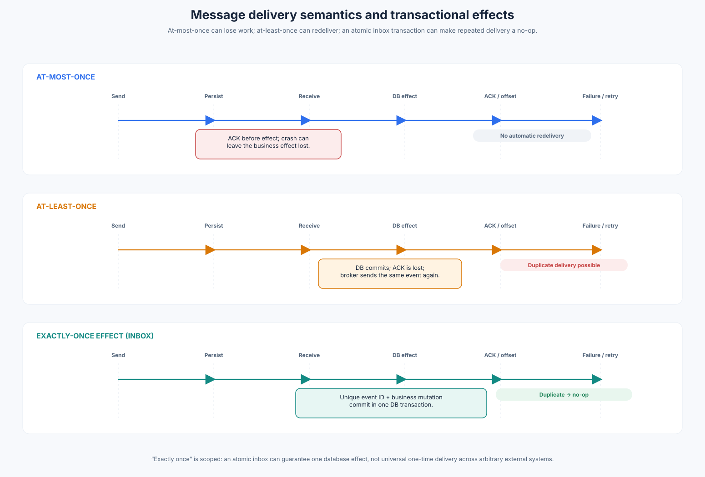
Diagram specification: Draw three parallel timelines for at-most-once, at-least-once, and exactly-once-effect-with-transactional-inbox. Mark send, broker persist, consumer receive, DB commit, ACK/offset commit, crash, retry, and duplicate. The at-most-once line must show acknowledgment before processing and possible lost effect. The at-least-once line must show DB commit followed by lost ACK and redelivery. The transactional inbox line must show unique event ID and business mutation inside one atomic DB transaction, with a duplicate redelivery becoming a no-op.
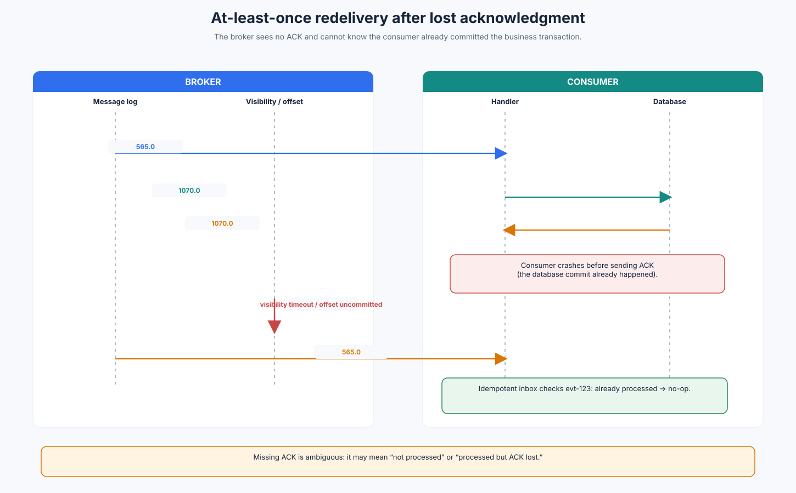
Diagram specification: Use broker and consumer
lifelines. Show message evt-123 delivered, business
transaction committed, consumer process crashing before ACK, broker
visibility timeout/offset behavior expiring, and the same event ID being
delivered again. Highlight that the transport cannot infer the first
transaction’s result from the missing ACK. Add a side note: the
idempotent consumer detects the repeated ID and skips the second
effect.
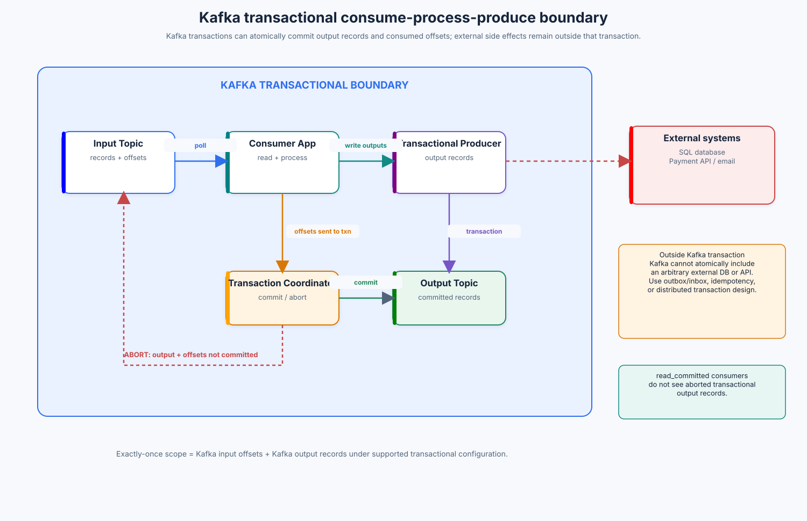
Diagram specification: Draw a Kafka
consume-process-produce transaction: consumer reads input records and
offsets; application computes result; producer writes output records;
transaction coordinator commits output records and input offsets
atomically. Show an abort path where output records remain invisible to
read_committed consumers. Add a clearly separated external
database/payment API box outside the Kafka transaction boundary, with a
note that Kafka transactions alone do not atomically include it.
15.5 Kafka and exactly-once scopes
Apache Kafka supports idempotent producers and transactions.
Idempotent producer sequencing prevents duplicate log entries caused by
retries within the producer’s supported session/protocol scope. Kafka
transactions can atomically commit produced records and consumed offsets
for Kafka-to-Kafka processing, enabling exactly-once semantics for
supported consume-process-produce pipelines when consumers use the
appropriate isolation mode (for example, read_committed)
and offsets are committed transactionally.
This does not automatically make an arbitrary write to PostgreSQL, an email send, or a payment API exactly once. For external databases, use a transactional integration pattern, idempotent writes, or a connector/transaction coordinator designed for that boundary.
Relevant producer configuration concepts include
enable.idempotence, acks=all, retries, and
bounded in-flight requests. Version defaults can change, so consult the
documentation for the Kafka release actually deployed. Current producer
documentation describes idempotence requirements and the interaction
with acknowledgments and retries.
Delivery comparison
| Property | At-most-once | At-least-once | Exactly-once effect (bounded transaction) |
|---|---|---|---|
| Message may be lost before processing | Yes | Not under assumed durable retry/retention conditions | Not within the defined transactional boundary if protocol succeeds |
| Duplicate delivery | Usually avoided by dropping/ack-first behavior | Expected | Can occur at transport layer; duplicate effect is suppressed |
| Processing effect | Zero or one | One or more | One committed effect per logical ID within boundary |
| Retry | Usually none after uncertain failure | Yes | Usually yes, with transaction/sequence/dedupe |
| Complexity | Lower | Moderate | Higher; careful transaction boundary and identity needed |
| Fit | Best-effort metrics/signals | Durable queues, event-driven systems | Stream state/output or transactional inbox/outbox workflows |
16. Idempotency and Deduplication
16.1 Mathematical meaning
An operation is idempotent if applying it multiple times has the same intended effect as applying it once:
Examples:
set_email(user, "a@example.com")is idempotent when it assigns a value.increment_balance(user, 10)is not idempotent if repeated.PUT /users/7/emailwith the same desired representation is idempotent by HTTP semantics.POST /paymentsis not inherently idempotent; the application must define a deduplication key and behavior.
Idempotency is about effects, not necessarily identical response bodies. A repeated request may receive the stored original response, a conflict response, or the current resource representation, depending on the API contract.
16.2 Idempotency keys
A client generates a high-entropy key for one logical operation and reuses it on retries. The server stores the key, request fingerprint, processing state, and result. The uniqueness scope should include the authenticated account/tenant and operation, so unrelated users cannot collide or retrieve each other’s responses.
A robust server should:
- Require or accept a key for side-effecting operations.
- Normalize and hash the relevant request parameters.
- Enforce a unique constraint on
(tenant_id, operation, idempotency_key). - Atomically claim the key before the side effect.
- Reject reuse of the same key with a different request fingerprint.
- Return the previously stored result for a completed duplicate.
- Define behavior for an operation still marked
IN_PROGRESS. - Persist/reconcile ambiguous external outcomes.
- Define a retention period and avoid expiring a key before the maximum client retry window.
Key expiration is a business risk decision: after the key expires, the same key may no longer protect against a very late retry.
16.3 FastAPI payment example with SQLite transaction
This teaching example demonstrates local idempotency persistence. It
intentionally does not call a real payment provider. A
real integration should pass the same idempotency key to the provider
when supported, store provider references, use an outbox for downstream
events, and reconcile UNKNOWN outcomes.
# payment_api.py
import hashlib
import json
import sqlite3
from contextlib import contextmanager
from fastapi import FastAPI, Header, HTTPException
from pydantic import BaseModel, Field
DB_PATH = "payments.sqlite3"
app = FastAPI()
@contextmanager
def db():
conn = sqlite3.connect(DB_PATH, timeout=10, isolation_level=None)
conn.row_factory = sqlite3.Row
try:
yield conn
finally:
conn.close()
def init_db():
with db() as conn:
conn.execute("""CREATE TABLE IF NOT EXISTS idempotency (
tenant_id TEXT NOT NULL,
operation TEXT NOT NULL,
idem_key TEXT NOT NULL,
request_hash TEXT NOT NULL,
state TEXT NOT NULL,
response_json TEXT,
PRIMARY KEY (tenant_id, operation, idem_key)
)""")
conn.execute("""CREATE TABLE IF NOT EXISTS payments (
payment_id INTEGER PRIMARY KEY AUTOINCREMENT,
tenant_id TEXT NOT NULL,
amount_paise INTEGER NOT NULL,
currency TEXT NOT NULL,
status TEXT NOT NULL
)""")
class PaymentRequest(BaseModel):
amount_paise: int = Field(gt=0)
currency: str = Field(pattern="^[A-Z]{3}$")
@app.on_event("startup")
def startup():
init_db()
@app.post("/v1/payments")
def create_payment(
request: PaymentRequest,
idempotency_key: str = Header(alias="Idempotency-Key", min_length=16),
tenant_id: str = Header(alias="X-Tenant-ID"),
):
operation = "create-payment"
canonical = json.dumps(request.model_dump(), sort_keys=True, separators=(",", ":"))
fingerprint = hashlib.sha256(canonical.encode()).hexdigest()
with db() as conn:
conn.execute("BEGIN IMMEDIATE")
row = conn.execute(
"SELECT request_hash, state, response_json FROM idempotency "
"WHERE tenant_id=? AND operation=? AND idem_key=?",
(tenant_id, operation, idempotency_key),
).fetchone()
if row:
if row["request_hash"] != fingerprint:
conn.execute("ROLLBACK")
raise HTTPException(409, "Idempotency key reused with different parameters")
if row["state"] == "COMPLETED":
response = json.loads(row["response_json"])
conn.execute("COMMIT")
return response
conn.execute("ROLLBACK")
raise HTTPException(409, "Request with this key is still in progress")
conn.execute(
"INSERT INTO idempotency VALUES (?, ?, ?, ?, 'IN_PROGRESS', NULL)",
(tenant_id, operation, idempotency_key, fingerprint),
)
# This insert simulates a local payment record only.
cur = conn.execute(
"INSERT INTO payments(tenant_id, amount_paise, currency, status) "
"VALUES (?, ?, ?, 'SIMULATED')",
(tenant_id, request.amount_paise, request.currency),
)
response = {
"payment_id": cur.lastrowid,
"amount_paise": request.amount_paise,
"currency": request.currency,
"status": "SIMULATED",
}
conn.execute(
"UPDATE idempotency SET state='COMPLETED', response_json=? "
"WHERE tenant_id=? AND operation=? AND idem_key=?",
(json.dumps(response), tenant_id, operation, idempotency_key),
)
conn.execute("COMMIT")
return responseBEGIN IMMEDIATE obtains a write reservation in SQLite
and serializes competing writers. A relational production DB should use
the same unique-key invariant and an isolation/locking strategy suited
to its workload. The example’s X-Tenant-ID header is
illustrative, not authentication; derive tenant identity from a verified
principal in production. The example does not safely wrap a network
payment side effect inside a local DB transaction—doing so would not
make the provider and database atomic.
16.4 External payment uncertain outcome
Failure scenario:
- Customer sends a payment request with key
pay-abc. - Payment Service sends a request to Provider with key
pay-abc. - Provider charges the payment method and records the provider transaction.
- Network response is lost.
- Payment Service sees a timeout; it does not know whether the charge occurred.
- Client retries with the same key.
Correct handling:
- Retry using the same key, never mint a new one for the same logical attempt.
- Use the provider’s idempotency capability if documented, and pass the same key/request fingerprint.
- If the provider reports a prior result, persist that result and return it.
- If outcome remains unknown, query provider by its idempotency key or transaction reference and reconcile.
- Do not optimistically mark the payment failed just because a response timed out.
- Publish
PaymentSucceededorPaymentFailedthrough an outbox only after the local state is reconciled.
A key does not prevent all fraud, races, or provider-side duplication
unless the provider’s contract defines how it handles concurrency and
retention. Read the provider’s exact rules. For example, Stripe’s
current API documentation distinguishes API v1 and API v2 behavior: API
v1 stores the first status/body after endpoint execution begins
(including a 500 response), compares parameters on reuse,
and may prune keys after they are at least 24 hours old; requests
rejected before endpoint execution are not stored as an idempotent
result. API v2 has different retry behavior. These are Stripe-specific
rules, not a universal idempotency standard (Stripe API
reference).
16.5 Message deduplication and inbox pattern
A durable consumer uses a stable event identifier and a database uniqueness constraint:
CREATE TABLE processed_messages (
consumer_name TEXT NOT NULL,
event_id TEXT NOT NULL,
processed_at TIMESTAMP NOT NULL DEFAULT CURRENT_TIMESTAMP,
PRIMARY KEY (consumer_name, event_id)
);Python-style transaction:
def handle_event(conn, event):
try:
conn.execute("BEGIN")
conn.execute(
"INSERT INTO processed_messages(consumer_name, event_id) VALUES (?, ?)",
("inventory-v1", event["event_id"]),
)
conn.execute(
"UPDATE inventory SET available = available - ? WHERE sku = ?",
(event["quantity"], event["sku"]),
)
conn.commit()
return "processed"
except UniqueViolation: # Adapt to the selected DB driver's exception.
conn.rollback()
return "duplicate-skipped"
except Exception:
conn.rollback()
raiseA production implementation must catch the database’s precise unique-constraint exception, distinguish other integrity failures, validate available stock in the same transaction, and only acknowledge the broker after the database commit succeeds.
Deduplication alternatives include an unbounded processed-event table, a TTL/window, compacted state, idempotent upserts, and sequence-based application. TTL is safe only if old duplicates cannot reappear after the retention window, including replays, delayed retries, and disaster recovery.
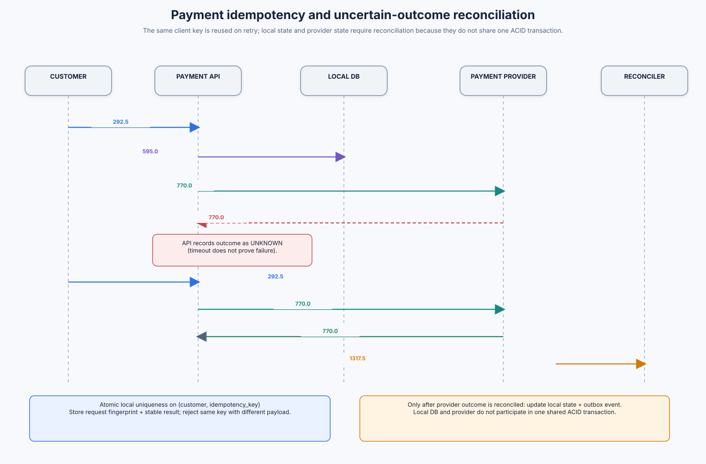
Diagram specification: Draw Customer → Payment API →
local idempotency table → external Payment Provider. Show one key
generated by the client and reused for retry. Mark provider charge
success, lost response, timeout, retry with same key, provider returning
prior result, and local state reconciliation. Include an alternate
UNKNOWN state and a reconciliation worker that queries the
provider; only a reconciled terminal outcome emits a payment event
through the outbox. Clearly show that local DB and provider do not share
one ACID transaction.
17. Retries, Exponential Backoff, Jitter, and Timeouts
17.1 Why retries exist—and why they are dangerous
Transient failures include a short network interruption, leader election, connection reset, temporary overload, or rate limiting. Retrying may turn a temporary failure into success. But a retry is extra offered load against a system that may already be failing. Retrying non-idempotent operations can duplicate side effects.
Retry only when:
- the failure is plausibly transient;
- the operation is idempotent or has an idempotency key;
- the remaining end-to-end deadline permits another attempt;
- the retry budget allows it;
- the server has not explicitly instructed the client not to retry.
Do not retry invalid input, permission denial, authentication
failure, incompatible schema, or permanent business rejection. Be
careful with 429, 503, and transport timeouts;
use bounded policies and server-provided guidance where applicable.
17.2 Timeout types
| Timeout | Meaning |
|---|---|
| DNS resolution timeout | Maximum wait for name lookup |
| Connect timeout | Maximum time to establish a connection |
| TLS handshake timeout | Maximum time to negotiate secure connection |
| Write timeout | Limit for sending request bytes |
| Read/response timeout | Limit while waiting for response bytes |
| Per-attempt timeout | Maximum duration for one attempt |
| End-to-end deadline | Total time budget including queueing, retries, and downstream calls |
Use deadlines, not independent full timeouts at every layer. If an API request has 2 seconds left, a downstream service should not start a 3-second RPC. Propagate remaining budget and reserve time for response serialization and cleanup.
Timeout selection from latency percentiles
If a downstream dependency’s measured latency distribution has p99 = 180 ms, a 250 ms timeout may be a reasonable starting hypothesis for a call with a 1% false-timeout budget, but this depends on network, client queueing, geographic path, and the full request budget. p99 is not a guarantee: 1% of requests exceed it by definition. Use histograms, successful latency under load, error rate, and deadline budget; validate with production-like load tests.
17.3 Exponential backoff
A common capped exponential backoff is:
where is the initial delay, is the zero-based retry index, and is the cap.
Example with ms and s:
| Retry index | Delay before jitter |
|---|---|
| 0 | 100 ms |
| 1 | 200 ms |
| 2 | 400 ms |
| 3 | 800 ms |
| 4 | 1,600 ms |
| 5 | 2,000 ms (capped) |
| 6 | 2,000 ms (capped) |
The cap prevents delays from growing without bound. The attempt limit and overall deadline prevent a request from retrying forever.
17.4 Jitter
If thousands of clients fail simultaneously and all retry after exactly 1, 2, 4, and 8 seconds, their retries synchronize into bursts. This is a retry storm. Jitter randomizes retry delays to spread work over time.
Common policies (where cap_n is the capped exponential
delay):
- Full jitter:
delay ~ Uniform(0, cap_n). - Equal jitter:
delay = cap_n/2 + Uniform(0, cap_n/2). - Decorrelated jitter: next delay is sampled from a
bounded range based on the previous delay, for example
Uniform(base, min(max, previous * 3)).
Full jitter can produce very short waits; equal jitter imposes a minimum proportional wait. The best policy depends on the service and workload. The key goal is to avoid synchronized retry waves while respecting deadlines.
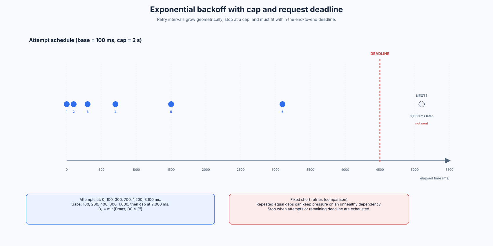
Diagram specification: Draw a time axis with attempts at t=0, then increasing gaps (D0, 2D0, 4D0, capped). Include a table of delay values for base=100 ms and cap=2 s. Show the attempt number and final deadline cutoff. Add a parallel flat fixed-retry line to show why constant immediate/short retries can keep pressure on an unhealthy dependency.
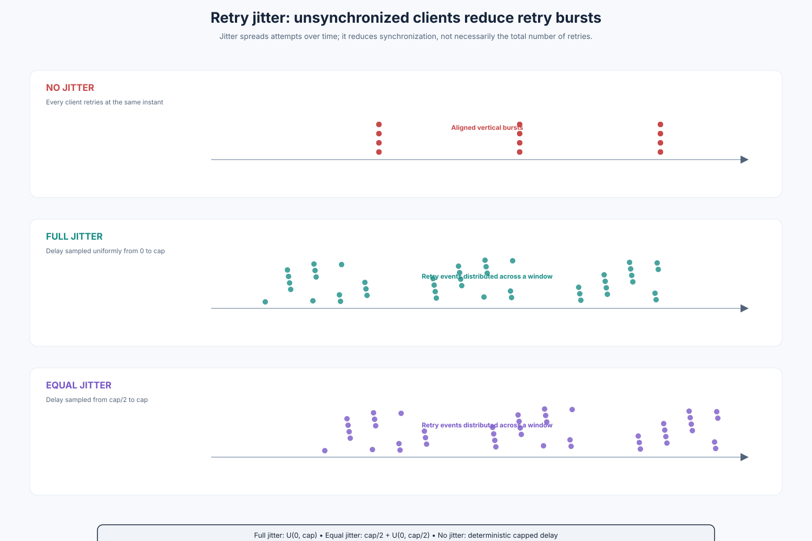
Diagram specification: Compare three timelines for a fleet of client requests after one outage: no jitter (aligned vertical retry bursts), full jitter (events spread from 0 to cap), and equal jitter (events spread across the upper half of cap). Label the formulas, show a histogram-like density of retry events, and annotate reduced synchronization rather than claiming fewer total attempts.
17.5 Retry amplification and cascading failures
Assume Gateway retries Order up to 3 attempts; Order retries Payment up to 3 attempts; Payment retries its DB up to 3 attempts. In the worst case, a single incoming request can cause up to:
attempts at the deepest dependency, depending on whether the attempt counts include the initial try. This is retry amplification. Add queue retries or client retries and the multiplier can grow further.
A cascading failure sequence:
- Database slows due to resource pressure.
- Payment requests time out.
- Payment retries and increases DB load.
- Order requests time out waiting for Payment and retry Payment indirectly.
- Gateway retries Order.
- Queue consumers lag and messages accumulate.
- Memory/thread pools saturate; unrelated requests fail.
Mitigations include one clearly owned retry layer where possible, bounded attempts, deadlines, retry budgets, jitter, circuit breakers, bulkheads, load shedding, queue limits, admission control, and graceful degradation.
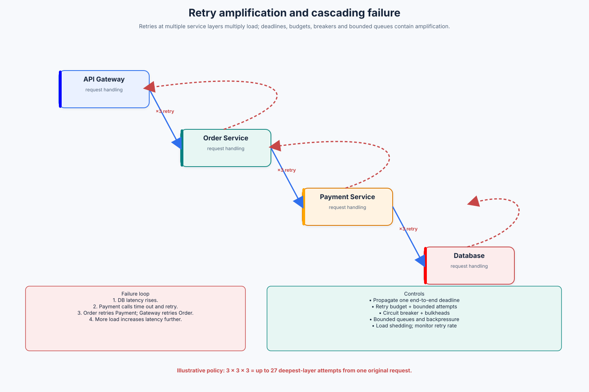
Diagram specification: Show Gateway → Order → Payment → Database as four stacked service boxes. Illustrate normal request flow, then a slow database causing Payment timeouts, retries, higher DB load, and upstream retry loops. Use red/orange feedback arrows for amplified retries and a side panel showing controls: deadline, retry budget, circuit breaker, bulkhead, and queue bound. Annotate the amplification product (e.g., 3×3×3=27 attempts at deepest layer under the illustrated policy).
17.6 Retryable error classification
| Failure | Retry? | Reason / policy |
|---|---|---|
| Invalid input / validation error | No | Same request will fail again |
| Authentication/authorization failure | No, unless credentials are refreshed | Retry blindly does not fix permission |
| Not found | Usually no | Unless eventual creation/replication semantics explicitly justify polling |
| Conflict / precondition failed | Not blindly | Caller may need to reread and recompute |
| Rate limit | Maybe | Honor Retry-After, use jitter, reduce load |
| Service unavailable | Maybe | Bounded retry if operation is safe |
| Connection reset before send | Often safe to retry | But know whether request bytes may have reached peer |
| Timeout after request may have been processed | Only with idempotency/reconciliation | Outcome is uncertain |
| Serialization/schema failure | No | Fix contract or route to dead letter |
17.7 Python async retry helper with deadline and full jitter
import asyncio
import random
import time
from collections.abc import Awaitable, Callable
from typing import TypeVar
T = TypeVar("T")
class RetryableError(Exception):
"""Raise only for failures the caller has classified as transient."""
async def retry_async(
operation: Callable[[float], Awaitable[T]],
*,
total_timeout: float = 5.0,
max_attempts: int = 4,
base_delay: float = 0.1,
max_delay: float = 1.0,
) -> T:
deadline = time.monotonic() + total_timeout
last_error: Exception | None = None
for attempt in range(max_attempts):
remaining = deadline - time.monotonic()
if remaining <= 0:
raise TimeoutError("overall deadline expired") from last_error
try:
# operation receives remaining budget and should pass it downstream.
return await asyncio.wait_for(operation(remaining), timeout=remaining)
except RetryableError as exc:
last_error = exc
except asyncio.TimeoutError as exc:
# A timeout is retryable only if operation is idempotent or keyed.
last_error = exc
except Exception:
# Unknown/programming/permanent errors are not retried.
raise
if attempt == max_attempts - 1:
break
cap = min(max_delay, base_delay * (2 ** attempt))
delay = random.uniform(0.0, cap) # full jitter
remaining = deadline - time.monotonic()
if remaining <= 0:
break
await asyncio.sleep(min(delay, remaining))
if time.monotonic() >= deadline:
raise TimeoutError("overall deadline expired") from last_error
raise RuntimeError("retry attempts exhausted") from last_errorThis helper is a teaching primitive. It assumes the caller correctly
classifies transient exceptions and makes the operation safe to retry.
In asyncio, cancellation should generally propagate; do not
swallow CancelledError in broad exception handlers. The
helper’s timeout cancellation may not stop remote server work, so
idempotency is still required. Production libraries should expose retry
budget, metrics, server hints, cancellation, and a circuit-breaker
policy.
17.8 Circuit breaker and bulkhead
A circuit breaker has states such as:
- Closed: requests flow; failures are measured.
- Open: requests fail fast for a cooldown period instead of hitting a failing dependency.
- Half-open: a limited number of probes test recovery.
A bulkhead limits resource consumption by dependency or workload (separate thread pools, connection pools, semaphores, or concurrency limits). It prevents one slow dependency from consuming all resources.
Minimal circuit-breaker sketch:
import time
class CircuitBreaker:
def __init__(self, failure_threshold=5, reset_after=10.0):
self.threshold = failure_threshold
self.reset_after = reset_after
self.failures = 0
self.opened_at = None
def allow(self):
if self.opened_at is None:
return True
if time.monotonic() - self.opened_at >= self.reset_after:
return True # one real implementation should limit half-open probes
return False
def success(self):
self.failures = 0
self.opened_at = None
def failure(self):
self.failures += 1
if self.failures >= self.threshold and self.opened_at is None:
self.opened_at = time.monotonic()The breaker can wrap the retry helper so one logical request consumes a bounded retry budget, then contributes one dependency-level success/failure observation:
async def call_with_breaker(breaker, operation):
if not breaker.allow():
raise RuntimeError("dependency circuit is open")
try:
result = await retry_async(
operation,
total_timeout=2.0,
max_attempts=3,
base_delay=0.05,
max_delay=0.4,
)
except Exception:
breaker.failure()
raise
else:
breaker.success()
return resultThis intentionally counts a logical call’s final result rather than each individual retry; some systems use attempt-level rolling metrics instead. The sketch lacks concurrency-safe state, rolling windows, half-open probe limits, error classification, and observability. Use a mature implementation or add those requirements before production.
| # 18. Gossip and Epidemic Protocols |
| ## 18.1 What gossip solves |
| A gossip protocol disseminates information through repeated peer-to-peer exchanges. It is inspired by epidemic spreading: a node that learns a fact tells a few peers, those peers tell others, and the information gradually reaches a large fraction of the cluster. |
| Gossip is useful when many nodes need approximate, eventually convergent knowledge without requiring every node to contact a central coordinator for every update. Common information includes membership, liveness suspicion, node metadata, cluster configuration versions, and lightweight application events. |
| Gossip usually provides probabilistic dissemination and eventual convergence, not an instantaneous global view or a strong consistency guarantee. A membership view on Node A may temporarily differ from Node B’s view. A protocol must define how conflicting versions are reconciled and what happens during partitions. |
| ## 18.2 Core terms |
| - Seed node: initial contact point used to discover other peers. It need not remain a permanent central coordinator. - Peer selection: how a node picks one or more other members, often randomly. - Fanout: number of peers contacted per round. - Gossip interval: time between exchange opportunities. - Membership view: a node’s locally maintained estimate of cluster members and states. - Version/sequence: metadata used to distinguish newer state from stale state. - Convergence: a condition where all reachable healthy nodes have learned the same relevant update, subject to protocol assumptions. - Anti-entropy: periodic state comparison and repair, rather than relying only on rumor propagation. |
| ## 18.3 Push, pull, and push-pull |
| Push: Node A sends its current information to selected peers. This spreads new updates quickly when the sender knows them, but can repeatedly send data peers already have. |
| Pull: Node A asks selected peers for versions or state it lacks. Pull is useful for catching up a node that missed updates, but can introduce an extra request/response round trip. |
| Push-pull: Peers exchange summaries and then each side sends missing/newer information. This can improve convergence and repair missed updates, at the cost of larger exchanges and more protocol complexity. |
| ### Rumor mongering |
| A node with a new rumor chooses peers and forwards it. A rumor may stop being propagated after a node has contacted enough peers or has a sufficiently high probability that others know it. Stopping reduces message overhead, but does not guarantee every node received the rumor; anti-entropy can repair omissions. |
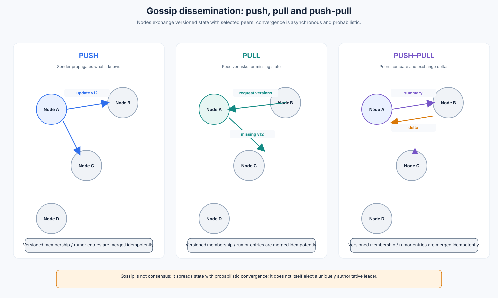 |
Diagram specification: Show Node A learning
MembershipUpdate(N7=ALIVE, version=12). In a push panel, A
sends the update to B and C. In a pull panel, D requests versions from E
and receives missing version 12. In a push-pull panel, B and C exchange
summaries, compare versions, and both transfer missing entries. Use
arrows to distinguish request, summary, and state transfer. Add a note
that gossip convergence is asynchronous and probabilistic. |
| ## 18.4 Basic push gossip algorithm |
1. Every node stores a versioned local state or set of rumors. 2.
Periodically select f peers from the currently known
membership. 3. Send updates or a compact summary to each selected peer.
4. Receiver compares versions and merges newer information. 5. Receiver
may forward the update in later rounds. 6. Repeat until the update
reaches the desired fraction of healthy nodes. |
A simple merge rule can be “keep the highest version for each
(node_id, attribute).” That is only safe if versions are
generated in a comparable, well-defined scope. Arbitrary wall-clock
timestamps are not a reliable version order under skew. Systems use
incarnation numbers, logical counters, version vectors, or
domain-specific conflict rules. |
| ## 18.5 Python simulation with 10 nodes |
| The simulation below demonstrates push gossip for one immutable rumor. It is not a real membership protocol: it assumes a connected, lossless network, fixed membership, no crashes, and round-based communication. |
| ```python import random |
| def simulate_push_gossip(node_count=10, fanout=2, seed=7, max_rounds=20): rng = random.Random(seed) known = [False] * node_count known[0] = True # Node 0 starts with the rumor. history = [sum(known)] |
| for round_no in range(1, max_rounds + 1): senders = [i for i, has_rumor in enumerate(known) if has_rumor] newly_informed = set() for sender in senders: candidates = [i for i in range(node_count) if i != sender] for peer in rng.sample(candidates, min(fanout, len(candidates))): newly_informed.add(peer) for peer in newly_informed: known[peer] = True history.append(sum(known)) print(f”round {round_no}: {sum(known)}/{node_count} informed”) if all(known): break |
| return history |
| if name == “main”: simulate_push_gossip() ``` |
| Output varies with the random seed and algorithm details. This simple simulation snapshots senders at the start of each round, so information learned during a round is forwarded only in the next round. A real protocol may gossip continuously, piggyback updates, batch metadata, and account for failure suspicion and message loss. |
| ## 18.6 Push-pull and anti-entropy simulation |
| ```python import random |
| def push_pull_round(states, fanout, rng): n = len(states) pairs = [] for a in range(n): for b in rng.sample([x for x in range(n) if x != a], min(fanout, n - 1)): pairs.append((a, b)) |
| # Use a snapshot so one exchange does not create order-dependent effects # inside this teaching round. snapshot = [set(s) for s in states] next_states = [set(s) for s in snapshot] for a, b in pairs: union = snapshot[a] | snapshot[b] next_states[a] |= union next_states[b] |= union return next_states |
| def run_push_pull(node_count=10, fanout=1, seed=4, rounds=10): rng = random.Random(seed) states = [set() for _ in range(node_count)] states[0].add(“rumor-1”) for r in range(rounds): states = push_pull_round(states, fanout, rng) informed = sum(“rumor-1” in state for state in states) print(f”round {r + 1}: {informed}/{node_count}“) if informed == node_count: break return states ``` |
| This model shares the union of each selected pair’s state. A real implementation needs versioned records, bounded payloads, cryptographic/authentication protections, conflict resolution, and network-failure handling. |
| ## 18.7 Anti-entropy and Merkle trees |
| Anti-entropy periodically compares replicas to discover state divergence, even if a rumor was lost. Naively comparing every record can be expensive. A Merkle tree hashes leaves (records or key ranges) and internal nodes (child hashes). Replicas compare root hashes; equal roots imply equal content under the hash/collision assumptions. If roots differ, they descend into mismatching branches to identify ranges that need transfer. |
| A practical protocol may: |
| 1. Partition keyspace into ranges. 2. Compute a hash per range, then a Merkle tree over those hashes. 3. Exchange roots. 4. Descend only into mismatching subtrees. 5. Exchange the differing keys/versions. 6. Apply the system’s conflict-resolution and tombstone rules. |
| Merkle trees reduce comparison bandwidth when replicas are mostly equal, but building and maintaining the trees costs CPU, memory, and coordination with compaction/updates. |
| ### Basic anti-entropy hash comparison in Python |
| This teaching example hashes sorted key-value pairs and compares two replica snapshots. It is a one-level digest, not a full Merkle tree; a production implementation recursively hashes partitions/ranges so it can isolate differences efficiently. |
| ```python import hashlib import json |
| def digest(records: dict[str, dict]) -> str: canonical = json.dumps(records, sort_keys=True, separators=(“,”, “:”)) return hashlib.sha256(canonical.encode(“utf-8”)).hexdigest() |
| def differences(left: dict, right: dict) -> tuple[set, set]: “““Return keys missing/different on right and keys missing/different on left.”“” left_needs = set() right_needs = set() for key in left.keys() | right.keys(): if key not in right or (key in left and left[key] != right[key]): left_needs.add(key) if key not in left or (key in right and right[key] != left[key]): right_needs.add(key) return left_needs, right_needs |
| replica_a = {“k1”: {“v”: 1}, “k2”: {“v”: 2}} replica_b = {“k1”: {“v”: 1}, “k3”: {“v”: 3}} print(“same:”, digest(replica_a) == digest(replica_b)) print(“A should send:”, differences(replica_a, replica_b)[0]) print(“B should send:”, differences(replica_a, replica_b)[1]) ``` |
| This code assumes canonical JSON is a valid deterministic representation and compares Python values directly. Real replicas need canonical encoding, version metadata, tombstones for deletions, conflict resolution, authenticated range exchange, and protection against transferring stale values over newer ones. |
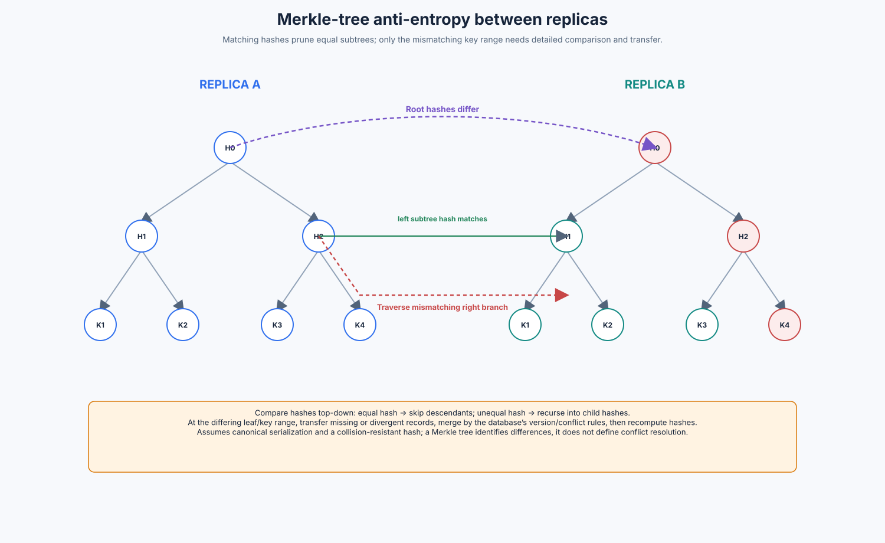 |
| Diagram specification: Two replicas A and B each show a three-level Merkle tree. Their root hashes differ; one child subtree matches and one differs. Highlight only the mismatching branch being traversed and the final differing key range transferred from A to B. Show a version/merge step after data transfer. Label equal hash = no need to compare descendants (assuming secure hash and identical canonicalization). |
| ## 18.8 Epidemic spreading model |
| A simplified continuous-time rumor model assumes each informed node contacts peers at rate , and an uninformed node becomes informed upon contact. In an idealized, well-mixed population of nodes, if nodes are informed, a rough differential model is: |
| This logistic approximation describes rapid initial spread followed by slower completion as uninformed nodes become scarce. It assumes homogeneous contact, independent encounters, and no network partitions or failures. Real gossip topologies, fanout, retransmissions, peer selection, and message loss change the propagation curve. |
For a discrete push model, if every informed node contacts
f independently selected peers in a round, the expected
number of contacts is approximately f × I; duplicate
contacts and already-informed targets reduce the number of newly
informed nodes. Early growth can be roughly multiplicative, but the
number of distinct informed nodes can never exceed N. |
| ## 18.9 Membership, heartbeats, and failure suspicion |
| A membership subsystem tracks nodes and their state: joining, alive, suspect, dead, or left. A heartbeat is a liveness signal, but missing heartbeats do not prove a process has crashed. It could be overloaded, partitioned, paused by a long garbage collection event, or unable to reach the observer. |
| A failure detector therefore makes a suspicion decision based on elapsed time, missed probes, indirect acknowledgments, or a statistical model. It trades detection speed against false positives. Suspicion can be reversible: another node may report a higher incarnation number or a successful probe, clearing the suspicion. |
| ### SWIM |
The SWIM protocol (Scalable Weakly-consistent Infection-style
Process Group Membership) separates failure detection from
membership-update dissemination. A member periodically probes a randomly
selected peer (PING). If no ACK arrives, it may ask other
peers to perform indirect probes (PING-REQ). Membership
changes are disseminated infection-style, often piggybacked on protocol
messages. A suspicion stage can reduce false positives before declaring
a member failed. |
| SWIM’s design goal includes scalable per-member message load and fast dissemination; it is not a consensus algorithm and does not make every node’s membership view identical at every instant. Applications needing a single agreed configuration or leader must use an appropriate consensus/coordination mechanism. |
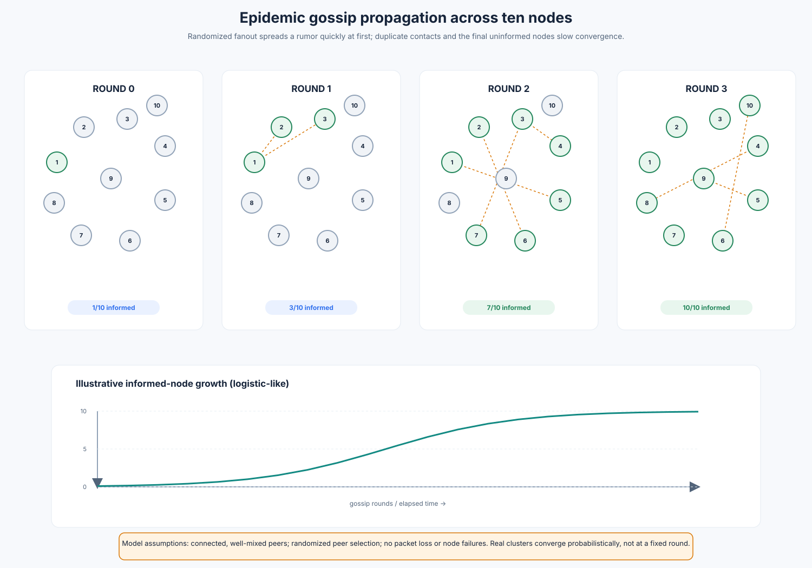 |
| Diagram specification: Depict an initial informed node and successive gossip rounds across a 10-node network. Use four time slices or round columns, with distinct node states (uninformed/informed), fanout arrows, and at least one duplicate contact to show why actual new infections are fewer than total sends. Include a small logistic-style curve showing fast early spread and slower final convergence. Label the model assumptions: connected, well-mixed, randomized peer selection, no packet loss, no failures. |
| ## 18.10 Real systems using gossip |
| - Apache Cassandra: uses gossip for sharing endpoint membership and state and for failure detection. It is part of cluster communication and routing decisions; it is not by itself the database’s consistency/replication protocol. - Consul/Serf: uses LAN and WAN gossip pools for membership and event dissemination. Consul’s server-side catalog/state management also uses Raft for consensus; the two mechanisms serve different roles. - Dynamo-style systems: epidemic-style dissemination and anti-entropy are design concepts in Dynamo’s highly available key-value architecture; concrete implementations differ. - Redis Cluster: uses cluster bus messages and gossip-like dissemination for node state/failure information; do not assume it uses the identical SWIM algorithm. |
| ### Gossip limitations and trade-offs |
| - Probabilistic arrival: no instant all-node delivery guarantee. - Temporary inconsistency: different members hold different views during convergence. - Duplicate updates: peers may receive the same rumor multiple times. - Metadata growth: membership and version metadata must be bounded/compacted. - False suspicions: overload or partitions can look like failure. - Partition behavior: separate components can form conflicting local views; merge policy matters. - Security: authenticate peers, encrypt sensitive traffic, prevent forged membership updates, and rate-limit gossip input. - Not consensus: gossip can disseminate a leader decision but does not ensure all nodes agreed on it. |
19. Comprehensive Communication Pattern Comparison
| Pattern | Model | Coupling | Ordering | Delivery / reliability | Typical latency | Best use |
|---|---|---|---|---|---|---|
| RPC | Caller invokes method on service | Temporal and contract coupling | Per-call/stream rules | Response/status; retries are app policy | Low when healthy and nearby | Synchronous service operation |
| REST | HTTP resource request-response | Client depends on resource contract | HTTP exchange order per connection/stream; no global order | HTTP semantics; retries depend on method/idempotency | Low to moderate | Public APIs, resource access |
| GraphQL | Client selects fields from typed graph | Schema coupling; client query flexibility | Within one operation execution; no global event order | Transport-dependent; mutations need idempotency | Depends on resolvers | Flexible UI data aggregation |
| Point-to-point messaging | Producer to queue/competing consumer | Producer and consumer decoupled in time | Queue/partition-specific | Broker-specific ack/retry/durability | Often higher, asynchronous | Background jobs and commands |
| Publish-subscribe | Event to topic and multiple subscriptions | Producer decoupled from consumers | Topic/partition-specific | Broker and subscription-specific | Asynchronous | Fan-out events and integration |
| Gossip | Peer-to-peer dissemination | Low central dependency | Eventually convergent, not generally total ordered | Probabilistic dissemination plus repair | Converges over rounds/intervals | Membership and replicated metadata |
One service can use all of these: REST at the edge, gRPC between internal services, Kafka for durable event streams, shared memory inside a high-performance process pair, and gossip for cluster membership.
20. Real-World Architecture Case Studies
Evidence discipline: The examples below distinguish widely documented mechanisms from simplified architecture illustrations. A company name is not a license to infer private implementation details. Unless a cited engineering source documents a mechanism, the workflow is presented as a representative design pattern rather than a claim about an exact production deployment.
20.1 Netflix-style microservice communication and resilience
Problem: A streaming product has many services and dependencies. A slow recommendation, profile, entitlement, or catalog dependency should not consume all resources or take unrelated user flows down.
Representative architecture: Edge/API gateway → service APIs → data stores and event streams. Internal calls can use RPC/HTTP; asynchronous events can distribute state changes. Resilience patterns include timeouts, bulkheads, circuit breakers, fallbacks, load shedding, and observability. Netflix publicly documented Hystrix as a latency and fault-tolerance library for distributed systems; its lifecycle and current maintenance status should be checked before selecting it for a new deployment.
Mechanism and lessons: Keep synchronous dependency graphs shallow; make fallback behavior explicit; measure tail latency and dependency health; avoid retries that amplify load. The lesson is not “use one specific Netflix library,” but isolate failures and budget time across the request path.
20.2 Uber-style RPC and event communication
Problem: A large real-time platform needs low-latency request-response for dispatch and state queries while distributing ride, location, and operational events to multiple consumers.
Representative architecture: Mobile clients call an edge API; internal services use RPC for synchronous decisions; event streaming and queues distribute state transitions to analytics, notifications, and downstream workflows. gRPC/Protobuf is a common modern choice for typed internal RPC, but this description should not be read as a complete inventory of Uber’s private production stack.
Lessons: Separate commands (request a state change) from events (facts that have occurred); attach trace context; bound streams and queues; partition high-volume event streams by a domain key; make consumers idempotent.
20.3 Amazon-style order processing and asynchronous messaging
Problem: Checkout touches inventory, payment, fulfillment, notification, and analytics, but one failure should not force every function to execute in one distributed database transaction.
Representative architecture: Order Service commits a local order state and outbox event; an asynchronous workflow reserves stock and coordinates payment; consumers update their own databases; compensating actions handle failed later steps.
Lessons: Use a saga for cross-service workflow state, transactional outbox for reliable event intent, idempotent consumers, bounded retries, and reconciliation. This is a general architecture pattern, not a claim about Amazon’s undisclosed internal implementation.
20.4 Google-style gRPC and Protocol Buffers
Documented technology: gRPC is an open-source RPC framework using HTTP/2, with Protobuf as its default IDL and serialization format. Generated clients and servers reduce hand-written contract glue and support multiple languages.
Why it fits: Typed contracts, efficient binary messages, streaming, and language interoperability are useful for service-to-service communication. Teams must still manage deadlines, TLS, schema evolution, status mapping, and deployment compatibility.
20.5 Apache Kafka delivery and transactions
Documented technology: Kafka’s producer supports idempotence to suppress duplicates caused by producer retries within its protocol scope. Kafka transactions coordinate produced records and consumed offsets so Kafka-to-Kafka pipelines can provide exactly-once processing under the documented configuration and consumer isolation semantics.
Why it fits: Durable logs, replay, partitioning, and horizontal consumer scaling are valuable in streaming systems. The boundary is crucial: transactional writes to Kafka do not automatically atomically include a random external database or payment API.
20.6 Apache Cassandra gossip and replication
Documented technology: Cassandra’s Dynamo architecture documentation describes gossip for disseminating membership and endpoint state and supporting failure detection/routing decisions. Its consistency levels and replication behavior are separate concerns; gossip is not a consensus guarantee for every write.
Lessons: Local membership views can temporarily differ. Failure detection is suspicion under uncertainty. Operators should understand seed configuration, network reachability, node replacement, and the effect of incorrect failure suspicion.
20.7 Stripe-style payment idempotency
Problem: A client times out after a payment attempt and cannot tell whether a provider executed it.
Publicly documented practice: Stripe documents idempotent requests, where a client sends an idempotency key to make retries of a request safe within the API’s rules. The exact caching behavior, parameter matching, and retention are provider contract details; do not assume every provider behaves identically.
Lessons: Reuse the same key for the same logical operation; do not create a new key merely because the response was lost; persist provider IDs; reconcile unknown outcomes; handle same-key concurrent requests deliberately.
20.8 WhatsApp-style messaging
Representative design: A messaging client sends a message to a service that durably stores or routes it, then delivery receipts and read receipts represent distinct states. A queue or per-conversation ordered log can serialize the message sequence; push notifications alert offline devices, while the app synchronizes durable history when reconnecting.
Lessons: Distinguish server-accepted, device-delivered, and user-read. Use stable message IDs, per-conversation ordering/version metadata, retries, and deduplication. This is a conceptual messenger architecture, not a claim about WhatsApp’s private transport/storage internals.
20.9 E-commerce API composition
Representative design: Public REST or GraphQL API → API gateway/backend-for-frontend → internal gRPC calls → domain services. Events publish to Kafka or another broker. The public contract is shaped around client needs, while internal service contracts can be more domain-specific.
Lessons: Do not expose every internal RPC directly to browsers; avoid chatty aggregation; use caching and request coalescing for reads; separate checkout’s critical synchronous path from analytics and notifications.
20.10 Distributed data pipelines with Avro
Representative design: Producers write events encoded with Avro and a schema ID. A schema registry validates compatibility. Consumers fetch the writer schema and resolve the event into their reader schema. Downstream transformations may re-emit a new compatible schema.
Lessons: Test historical data with the new reader, retain schema IDs with messages, monitor deserialization failure rates, and plan for replay. Schema Registry is an ecosystem component; Avro’s writer/reader resolution is part of the format specification.
21. Practical Engineering Implementations
This section is an implementation map tying the complete examples in earlier sections to the requested practice topics. Install only the dependency needed for the chosen example; pin compatible versions in a real project.
| # | Implementation | Where shown / key files | Production extension |
|---|---|---|---|
| 1 | REST API using FastAPI | Section
5.5, main.py |
DB, auth, migrations, tracing |
| 2 | gRPC service with Protobuf | Section 3.5,
inventory.proto, server.py,
client.py |
TLS, durable DB, health, concurrency |
| 3 | GraphQL schema and resolvers | Section 6.6,
graphql_app.py |
DataLoader, auth, depth/cost limit |
| 4 | RPC lifecycle | Section 2.1 | Deadlines, correlation, retry scope |
| 5 | Message producer and consumer | Example below | Broker durability, auth, metrics |
| 6 | JSON serialization | Section 10.2 | Schema validation and canonicalization |
| 7 | Protobuf serialization | Section 11.4 | CI compatibility tests |
| 8 | Avro serialization | Section 12.3 | Registry, subject naming, compatibility |
| 9 | MessagePack serialization | Section 13 | Explicit application schema/version |
| 10 | Schema evolution | Section 14 | CI registry checks and replay tests |
| 11 | At-most-once | Section 15.2 | Understand/accept loss behavior |
| 12 | At-least-once | Section 15.3 | Idempotent handler and ACK-after-commit |
| 13 | Idempotent consumer | Section 16.5 | Unique constraints and transaction boundaries |
| 14 | Deduplication | Section 16.5 | Retention/replay policy |
| 15 | Payment API with key | Section 16.3 | Provider idempotency and reconciliation |
| 16 | Exponential backoff | Section 17.3 | Attempt and time budget |
| 17 | Full jitter | Section 17.4 | Fleet-wide load testing |
| 18 | Timeout/deadline propagation | Sections 3.4 and 17.2 | Propagate remaining deadline across all hops |
| 19 | Circuit-breaker integration | Section 17.8 | Rolling windows, half-open limits |
| 20 | Push gossip | Section 18.5 | Loss, churn, versioned records |
| 21 | Push-pull gossip | Section 18.6 | Membership/security/partition model |
| 22 | Anti-entropy | Section 18.7 | Merkle trees over canonical records |
21.1 Generic producer/consumer with explicit acknowledgment
The following dependency-free example models an in-memory queue to illustrate the control flow. It is not durable and does not provide broker delivery guarantees.
from collections import deque
from dataclasses import dataclass
from typing import Callable
@dataclass(frozen=True)
class Message:
event_id: str
payload: dict
class TeachingQueue:
def __init__(self):
self.pending = deque()
self.in_flight = {}
def publish(self, message: Message):
self.pending.append(message)
def receive(self, delivery_tag: int):
if not self.pending:
return None
message = self.pending.popleft()
self.in_flight[delivery_tag] = message
return message
def ack(self, delivery_tag: int):
self.in_flight.pop(delivery_tag, None)
def nack_requeue(self, delivery_tag: int):
message = self.in_flight.pop(delivery_tag, None)
if message is not None:
self.pending.appendleft(message)
def consume_once(queue: TeachingQueue, tag: int,
handler: Callable[[Message], None]):
message = queue.receive(tag)
if message is None:
return False
try:
handler(message) # Must be idempotent for redelivery safety.
queue.ack(tag) # In a durable broker, ACK only after durable effect.
except Exception:
queue.nack_requeue(tag)
raise
return TrueThe same queue can illustrate at-most-once vs. at-least-once ACK placement:
def handle_at_most_once(queue, tag, handler):
message = queue.receive(tag)
if message is None:
return False
queue.ack(tag) # ACK first: crash after here can lose the effect.
handler(message)
return True
def handle_at_least_once(queue, tag, handler):
message = queue.receive(tag)
if message is None:
return False
try:
handler(message) # Durable business effect must finish first.
queue.ack(tag) # Crash before ACK may cause redelivery.
return True
except Exception:
queue.nack_requeue(tag)
raisehandle_at_least_once can invoke handler
more than once after a crash between business commit and ACK; make the
handler idempotent. The in-memory queue above does not truly emulate
broker visibility timeouts or process-crash recovery, so the code
illustrates ordering only. This mock queue has no persistence,
visibility timeout, crash recovery, concurrency, dead-letter queue, or
broker protocol. Use it only to reason about ACK order; use a real
broker for integration testing.
21.2 Kafka conceptual producer settings
A typical Kafka producer that needs strong broker acknowledgment and idempotent retry behavior uses current-version defaults or explicit settings equivalent to:
acks=all
enable.idempotence=true
retries=<positive value or client-managed delivery timeout>For transactional read-process-write, configure a stable
transactional ID per producer instance/fencing strategy and use
transactions for produced records plus consumed offsets. Consumers that
must hide aborted transactional records use
isolation.level=read_committed. Verify current constraints
and defaults for the deployed broker/client versions. Do not copy a
config block across major versions without checking the official
versioned docs.
21.3 Deadline propagation with a remaining budget
import time
class Deadline:
def __init__(self, timeout_seconds: float):
self._expires = time.monotonic() + timeout_seconds
def remaining(self) -> float:
return max(0.0, self._expires - time.monotonic())
def require_time(self, minimum: float = 0.0):
remaining = self.remaining()
if remaining <= minimum:
raise TimeoutError("deadline budget exhausted")
return remaining
async def handle_request(incoming_timeout: float):
deadline = Deadline(incoming_timeout)
order_budget = deadline.require_time(0.05)
# await order_client.call(..., timeout=order_budget)
payment_budget = deadline.require_time(0.05)
# await payment_client.call(..., timeout=payment_budget)
return {"remaining_seconds": deadline.remaining()}Use monotonic time for local elapsed-time measurement; do not compare monotonic readings between hosts. At a service boundary, propagate a duration/remaining timeout or use the RPC framework’s supported deadline-propagation mechanism.
21.4 Schema compatibility CI checks
A practical pipeline should:
1. Compile/parse the new schema.
2. Compare it with the currently deployed schema according to registry policy.
3. Run old-writer → new-reader tests.
4. Run new-writer → old-reader tests if forward compatibility is required.
5. Replay a sample of historical production-shaped messages.
6. Run consumer contract tests.
7. Deploy tolerant consumers before enabling new producer fields.The compatibility checker does not detect every semantic incompatibility. Add domain-level assertions such as currency units, enum interpretation, and non-null business invariants.
22. Mathematical Concepts and Formulas
Mathematical models help reason about communication cost and failure probability, but each formula depends on assumptions. Use measurements and workload-specific models for production capacity planning.
22.1 Network latency and request-response time
A simplified request-response time is:
If client processing is included, add it separately.
T_network can include DNS, connection setup, TLS, routing,
retransmission, and proxy hops. Once a connection is warm, DNS/TLS setup
may not be paid on every request. Queueing can dominate during
overload.
Example: Serialization 1.2 ms + outbound queue 0.8 ms + request network 7 ms + server work 12 ms + response network 6 ms + deserialization 1 ms gives:
For a chain of sequential dependencies, latencies add. For independent parallel calls, critical-path latency is approximately the maximum branch time plus coordination/aggregation overhead. This is why parallel fan-out can reduce median wall time but increase tail-risk if any branch is slow.
22.2 Throughput and concurrency
Throughput is completed work per unit time:
Little’s Law, for a stable system, relates average number of in-flight requests , arrival/completion rate , and average time in system :
Example: At 500 requests/s and average time in system 0.2 s, average in-flight work is about 100 requests. If latency rises to 1 s at the same throughput, about 500 requests are in flight, increasing memory and resource pressure.
Little’s Law is an average relationship, not a guarantee about p99 or a safe concurrency limit. Use queueing theory and load tests for tail behavior.
22.3 Serialization overhead and payload size
For an end-to-end operation:
where S is payload bytes and B is effective
throughput bytes/s. With compression, replace S with
compressed size and add compression/decompression CPU time.
Example: A 2 MB payload over an effective 20 MB/s link takes at least about 100 ms of serialization-free transfer time, before protocol framing, queueing, and decode. A 3:1 compression ratio reduces transfer bytes to about 0.667 MB (roughly 33 ms at the same bandwidth) but may add CPU and latency.
22.4 Delivery probability with retries
If one attempt independently succeeds with probability , and there are independent attempts, the chance of at least one success is:
Example: If an attempt has 0.9 success probability, three independent attempts yield . This optimistic model assumes independence. Real failures are often correlated: a sustained outage makes retries fail together, which is why jitter, circuit breakers, and retry budgets matter.
The probability of exactly one successful attempt is not the same as exactly-once processing. A request can succeed remotely and lose its response, causing a second successful execution.
22.5 Backoff and jitter
Capped exponential backoff:
Full jitter samples:
Equal jitter samples:
Decorrelated jitter is often expressed as:
Example: If the capped window is 800 ms, full jitter may choose 76 ms, 412 ms, or 790 ms; equal jitter selects from 400–800 ms. The randomization spreads retries, but the client must still respect the end-to-end deadline.
22.6 Retry amplification
If every layer makes at most a_i attempts, the maximum
downstream attempts for one original request can approach:
Example: Three layers with three attempts each can produce 27 attempts at the deepest dependency. The precise number depends on retry ownership, whether the count includes the first attempt, and where failures occur. The formula illustrates why nested uncoordinated retries are dangerous.
22.7 Idempotency/deduplication probability
There is no universal probability formula for idempotency. A deterministic unique constraint on a stable operation key is a correctness mechanism, not a probabilistic filter. Probabilistic structures such as Bloom filters can help pre-filter duplicate candidates, but false positives are possible and a Bloom filter alone must not be the sole authority for suppressing financial or irreversible effects.
For a Bloom filter with m bits, n inserted
elements, and k hash functions, approximate false-positive
probability is:
The approximate optimal number of hash functions is . Use a durable unique index or exact record for the final decision when correctness matters.
22.8 Gossip fanout and message complexity
With N nodes and fanout f, a naive round
where every informed node sends to f peers can create up to
fN send attempts in that round. As more nodes become
informed, total sends across rounds may be O(N log N) under some
well-behaved randomized spreading models, but duplicate contacts and
protocol details change constants and guarantees.
If each node sends one ping to one peer per interval τ,
aggregate probe rate is roughly N/τ messages per unit time.
Direct all-to-all heartbeat uses O(N²) messages per interval, which
becomes costly as N grows.
22.9 Epidemic propagation approximation
For a simplified push epidemic with a well-mixed population, early growth can be roughly exponential while the uninformed population is large. A logistic approximation is:
where I is informed nodes, N is total
nodes, and β is an effective infection/contact rate. A
discrete approximation is that each informed node contacts
f random peers per round, yielding roughly fI
contact attempts; the number of new nodes is lower because contacts
collide or target nodes already informed.
Example: In a 10-node cluster, if one node initially knows a rumor and fanout is 2, the first round can inform at most two distinct peers from the starter. Later rounds grow from an increasing informed set. The final few nodes can take longer because contacts increasingly hit already-informed nodes. The simulation in Section 18.5 illustrates this behavior.
22.10 Message payload and network capacity
If a producer emits r messages per second with average
serialized size s bytes, raw payload throughput is:
For 4,000 messages/s at 1,500 bytes/message, payload rate is 6,000,000 bytes/s (about 6 MB/s decimal), before protocol overhead, replication, acknowledgments, compression, and network framing. A replicated broker may write/transfer multiple copies, so cluster-wide network and disk traffic can be several times producer payload rate.
Use p50/p95/p99 payload sizes, not only averages; large-message outliers can trigger memory pressure and long GC pauses. Prefer references to external object storage for very large blobs, with integrity and authorization metadata.
23. Interview Preparation
The questions below are organized from fundamentals to system design. Strong answers state guarantees and failure boundaries instead of using vague phrases such as “the network is reliable” or “Kafka is exactly once.”
23.1 Beginner questions
1. What is RPC?
RPC is an abstraction for invoking a procedure on another process. The client stub serializes arguments, sends a request, and decodes the response. Unlike a local call, it has variable latency, partial failures, timeout ambiguity, and duplicate-execution risk.
2. Why is a remote call different from a local function call?
The remote call crosses a network and process boundary. The server can finish while the client times out, packets can be delayed, and the client may not know whether a side effect happened. Remote calls need deadlines, retry policies, observability, authentication, and idempotency where mutations are involved.
3. What is REST?
REST is an architectural style for networked hypermedia systems. Its constraints include client-server separation, statelessness, cacheability, a uniform interface, and layered architecture; code-on-demand is optional. REST is not simply “JSON with HTTP verbs.”
4. What is GraphQL?
GraphQL is a typed API query language and execution runtime. Clients select fields from a schema, while resolvers fetch the requested data. It is flexible for related data but requires controls for query complexity, resolver cost, and field authorization.
5. What is serialization?
Serialization converts in-memory data into a defined representation (usually bytes or text) that can be transmitted or stored. Deserialization reconstructs an application-level value. A format and schema contract are needed for cross-language compatibility.
6. What is message passing?
Message passing is communication by sending discrete messages between processes. It makes boundaries explicit and is well suited to distributed systems, but requires handling delivery, ordering, persistence, and duplicate processing.
7. What is idempotency?
An operation is idempotent when repeating it has the same intended state effect as performing it once. Setting a field to a value is usually idempotent; incrementing a balance is not. Idempotency keys can make a non-idempotent endpoint safe for retries.
8. What is a timeout?
A timeout bounds how long a caller waits for an operation or a phase such as connection setup or response reading. A timeout does not prove the remote operation did not execute; it only ends the caller’s wait.
9. What is gossip?
Gossip is decentralized peer-to-peer information dissemination where nodes periodically exchange state with selected peers. It scales membership/state propagation but offers eventual, often probabilistic convergence rather than strong consensus.
10. What is a message broker?
A broker is middleware that accepts, stores, routes, or delivers messages between producers and consumers. Its persistence, acknowledgment, ordering, and delivery guarantees depend on the broker and its configuration.
11. What is the difference between synchronous and asynchronous communication?
Synchronous request-response makes the caller wait for a result; asynchronous messaging lets the producer continue after handing off a message, often while a broker buffers it. Async reduces temporal coupling but requires tracking workflow state and failures later.
12. What is backpressure?
Backpressure is a mechanism that prevents a fast producer from overwhelming a slower receiver. It can be implemented through flow control, bounded queues, demand signaling, rate limiting, and admission control.
13. What is a correlation ID?
A correlation ID groups related operations in logs or traces. It helps follow one workflow across services, but it is not a deduplication key and should not be used to suppress business operations.
14. What is the difference between authentication and authorization?
Authentication verifies identity or credentials. Authorization decides whether that identity may perform a specific action on a resource. A valid JWT does not automatically grant permission to every resource.
15. Why use a schema or IDL?
A schema defines field names/types and method contracts independently of one programming language. It enables code generation, validation, interoperability, compatibility checks, and controlled evolution.
23.2 Intermediate questions
16. gRPC vs. REST: when would you choose each?
gRPC is often preferred for internal typed RPC and streaming, with generated stubs and Protobuf. REST is often preferred for broad HTTP interoperability, resource semantics, browser support, and cacheability. Choose based on client ecosystem, streaming needs, tooling, latency, and API semantics—not a generic “faster” claim.
17. What is the GraphQL N+1 problem?
A resolver fetches a parent list, then fetches related data separately for each parent, causing one query plus N queries. DataLoader batching, eager loading, and carefully designed SQL can reduce it to a bounded number of queries.
18. Protobuf vs. JSON?
JSON is text-based and easy to inspect and consume broadly. Protobuf uses numeric field tags and a compact binary wire format with generated code and explicit evolution rules. Protobuf is valuable for strongly typed internal contracts; JSON remains excellent for public APIs and debugging.
19. Protobuf vs. Avro?
Protobuf is IDL-first with numeric field tags and generated language APIs; Avro’s writer/reader schema resolution is a strong fit for data pipelines and event logs where schema IDs/registry are common. Both support evolution, but their compatibility rules and tooling differ.
20. How does Avro schema resolution work?
The writer schema describes encoded bytes; the reader schema describes the consumer’s desired record. The reader resolves fields by schema rules, can use defaults for fields absent from writer data, and can ignore writer fields it does not need when names/types match requirements.
21. What is backward vs. forward compatibility?
Backward compatibility means a new reader can consume old writer data. Forward compatibility means an old reader can consume new writer data. Full compatibility requires both directions for the tested versions. Registry definitions of transitive compatibility should be checked for the specific product.
22. What is at-most-once delivery?
A message may be processed zero or one times. A common trade-off is acknowledging before business processing so it will not be redelivered after a crash; the cost is possible loss.
23. What is at-least-once delivery?
A durable retry/ack mechanism redelivers until the consumer acknowledges, under the broker’s assumptions. If the consumer committed business state but crashed before ACK, the message may be delivered again; consumers should be idempotent.
24. Why is exactly-once difficult?
A sender cannot know whether a remote side effect happened when the response is lost. Retrying can duplicate the effect; not retrying can lose it. Exactly-once effects require a bounded atomic transaction, idempotency/deduplication, or cooperation from the external system.
25. What is the transactional outbox pattern?
The service writes domain state and an outbox event row in one local database transaction. A relay publishes outbox rows later. Publication can repeat, so consumers deduplicate. It solves local DB/event-intent dual write, not every cross-system atomicity problem.
26. What is an inbox pattern?
A consumer records processed event IDs in the same database transaction as its business update. A unique constraint makes duplicate deliveries no-ops. The broker acknowledgment follows the commit.
27. What is exponential backoff?
A retry delay grows exponentially with the attempt number, commonly
min(cap, base × 2^n). It reduces pressure during a
sustained outage. Capping and a total deadline prevent unbounded
waiting.
28. Why add jitter to retries?
Jitter randomizes retry times so a fleet of clients does not retry in synchronized waves. It reduces burstiness and thundering-herd behavior; it does not reduce the number of logical operations by itself.
29. What is a retry budget?
A retry budget limits retries as a fraction or number of original requests over a window. It protects a failing dependency from unbounded extra load and provides a signal to fail fast or shed work.
30. What is deadline propagation?
A caller passes its remaining time budget to downstream calls. Each hop consumes from the same end-to-end budget instead of resetting a full timeout, preventing work from continuing after the user request can no longer succeed.
31. What is the difference between a timeout and cancellation?
A timeout is a local policy that expires a wait after a duration/deadline. Cancellation is a signal to stop work. A timeout may trigger cancellation, but cancellation is cooperative and does not undo already committed work.
32. What is a circuit breaker?
It stops sending requests to a failing dependency after a threshold/window, fails fast while open, and permits limited probes in half-open state. It prevents resource exhaustion and gives dependencies time to recover.
33. Push vs. pull gossip?
Push sends updates to selected peers; pull asks peers for missing versions. Push spreads fresh changes quickly; pull helps lagging members catch up. Push-pull combines both but increases exchange work.
34. What is anti-entropy?
Anti-entropy periodically compares replica state and repairs differences. Merkle trees can help identify mismatching key ranges without transferring all data.
35. Why is gossip failure detection probabilistic?
A missed heartbeat can result from process failure, network partition, overload, pauses, or packet loss. A failure detector estimates suspicion; it cannot always distinguish slow from failed in an asynchronous network.
36. Why isn’t a GraphQL single endpoint automatically more efficient?
One query can trigger many resolvers and database calls. Without batching, pagination, complexity limits, and efficient data access, a single HTTP request can be more expensive than several REST calls.
37. What is HTTP idempotency?
Repeated identical requests have the same intended effect on server state as one request. PUT and DELETE are defined as idempotent, but the response status/body need not be identical on every repetition.
38. What is the purpose of an ETag?
An ETag is a validator for a representation.
If-None-Match supports revalidation/caching;
If-Match can implement optimistic concurrency so an update
fails if the resource changed since the client read it.
39. What is the difference between a queue and a topic?
A queue commonly distributes messages among competing consumers; a topic commonly fans events out to multiple subscriptions. Real brokers provide different models, so inspect consumer group/subscription semantics and delivery behavior.
40. What is the difference between a broker ACK and business success?
Broker ACK may mean the broker persisted the message or that a consumer confirmed receipt. Business success means the business transaction committed. These events must be ordered and documented; an early ACK can lose work.
23.3 Advanced questions
41. Explain Kafka’s exactly-once processing boundary.
Kafka can coordinate consumed offsets and produced Kafka records in a transaction. Idempotent producer sequence numbers suppress duplicates from retries. Consumers using committed isolation avoid reading aborted transactional records. A side effect in an unrelated external system is outside that atomic Kafka transaction unless integrated through a suitable connector/transactional pattern.
42. Why should retries usually be owned by one layer?
Multiple retrying layers multiply attempts. If Gateway, Order, and Payment each make three tries, the DB may see up to 27 attempts. Centralizing policy makes deadlines and budgets understandable; lower-level retries may still be useful for transport-specific transient failures if bounded and included in the budget.
43. How do you choose a timeout from p99?
Measure the dependency’s latency distribution under representative load, include network and client queueing, and choose an attempt budget that fits the end-to-end deadline and acceptable false-timeout rate. p99 means 1% of observations are slower; a timeout at p99 deliberately risks expiring around that tail and must be validated.
44. How do you prevent a retry storm?
Use jittered exponential backoff, attempt caps, total deadlines, retry budgets, circuit breakers, concurrency limits, bounded queues, load shedding, and service-provided retry guidance. Monitor retries and saturation, not only request success.
45. How would you make a consumer safe under concurrent duplicate delivery?
Use a unique constraint on (consumer, event_id) and
insert that record plus business effect in one transaction. Concurrent
workers race on the unique key; only one transaction wins. The other
recognizes a duplicate and skips the effect. Ensure database isolation
and error handling are correct.
46. How would you evolve an event consumed by many services?
Add an optional field with a safe domain default; deploy tolerant consumers first; validate compatibility in CI; then enable producers to emit it; monitor old/new consumers; retain support through replay windows; remove old fields only after consumers and historical replays are migrated.
47. Why doesn’t TCP guarantee exactly-once RPC execution?
TCP delivers an ordered byte stream within a connection, not a business transaction. The connection can fail after the server executes but before the client receives the response. Application retries may invoke the handler again unless it deduplicates a logical operation.
48. How do gRPC streams implement backpressure?
The underlying HTTP/2 flow-control windows limit in-flight data. The framework may block/await writes until the receiver consumes data and sends window updates. Application-level bounded queues and read/write scheduling are still needed.
49. Why is HTTP/2 multiplexing not a complete solution to head-of-line blocking?
HTTP/2 multiplexes streams, but all frames share a TCP connection. A lost TCP segment delays delivery of later bytes on that connection, affecting streams whose frames follow it. QUIC/HTTP/3 changes transport behavior by giving streams independent delivery state.
50. How should a system handle a payment provider timeout?
Mark the result unknown/pending, reuse the same idempotency key for retry or query, use provider-side idempotency if supported, persist provider references, and run reconciliation. Do not infer failure from timeout and do not issue a new logical payment blindly.
51. What is the difference between gossip and consensus?
Gossip disseminates information with eventual/probabilistic convergence. Consensus makes a set of nodes agree on a value/order despite specified failures. Gossip can carry membership or a decided value, but it does not itself provide a single agreed decision.
52. How does SWIM reduce all-to-all heartbeat cost?
Instead of every node probing every other node, each member periodically probes a randomly selected peer; indirect probes and piggybacked membership updates disseminate information. This keeps per-member message load much lower than naive all-to-all heartbeats under the protocol model.
53. When would you use a Merkle tree?
When replicas have large mostly-equal datasets and need to identify which ranges differ. Exchange root hashes first, recursively compare mismatching branches, then transfer only changed records. It is not a conflict-resolution policy; versions/tombstones still need correct semantics.
54. What is the main operational risk of long-lived gRPC channels?
Connection lifecycle and balancing behavior. A single connection may pin many RPCs to one backend, stale DNS/resolver state may persist, and idle connections can be interrupted by proxies. Use compatible load-balancing policy, keepalive settings, health checks, and controlled channel rotation.
55. How do you secure internal RPC?
Use TLS or mTLS, authenticated workload identity, authorization at the service boundary, least privilege, secret rotation, network policy, input validation, and observability. “Internal network” is not an authorization model.
23.4 Scenario-based questions
56. Payment succeeded but the client timed out. What do you do?
The outcome is unknown. The client retries with the same idempotency key; the service checks its own idempotency record and provider status. If necessary, a reconciliation job queries the provider. It must not create a new payment operation key.
57. A consumer crashes after committing to its database but before ACK. What happens?
The broker may redeliver the event. The consumer’s inbox/unique event ID detects that the effect already committed and returns success without applying the mutation again, then acknowledges the message.
58. Old and new service versions are running and a new event field appears. How do you avoid a deployment failure?
Ensure consumers tolerate unknown/additional fields, add reader defaults where the format requires them, validate schema compatibility, deploy readers before writers, and monitor parse/semantic failures. Do not assume a parser’s tolerance means all application code is safe.
59. Your retry logic increases DB load during an outage. How do you fix it?
Reduce retry layers/attempts, add jitter and a retry budget, shorten request deadlines where appropriate, open a circuit breaker, limit concurrency, shed load, and repair the DB bottleneck. Do not increase retries as the first response to overload.
60. GraphQL query latency is high although the HTTP request count is low. How do you diagnose it?
Instrument field/resolver timings, database query count, downstream RPC calls, payload size, and traces. Check for N+1, missing indexes, unbounded nested lists, expensive authorization checks, and cache misses. Add request-scoped batching, pagination, complexity limits, and query plans.
61. A gossip cluster marks a healthy node dead during a network slowdown. What should you inspect?
Check probe/ACK latency, packet loss, CPU/GC pauses, network partitions, suspicion timers, indirect-probe success, and membership incarnation updates. Tune timeouts based on observed distributions; avoid treating every suspicion as definitive failure.
62. An external service responds after the caller’s deadline has expired. What should happen?
The caller should return/propagate deadline exceeded and stop waiting. The server should observe cancellation where possible, but work may already have committed. For mutations, persist operation state/idempotency and reconcile late completion; cancellation is not rollback.
63. A client needs a stable cursor while new rows are inserted. What pagination design helps?
Use keyset pagination ordered by a stable unique tuple such as
(created_at, id) and encode the last seen tuple in an
opaque cursor. If the product requires a consistent snapshot across all
pages, include a snapshot/version boundary; cursor pagination alone does
not freeze a changing dataset.
64. Two independent producers update the same entity and events arrive out of order. How do you handle it?
Define partitioning/ordering by entity key when possible, include entity version or sequence, and have consumers reject stale transitions or buffer dependencies. If updates are concurrent, use conflict resolution or a domain transaction rather than assuming timestamp order is causal.
65. How would you handle an outage that causes a large queue backlog?
Bound consumer concurrency to downstream capacity, scale workers carefully, rate-limit producers, prioritize critical message classes, monitor oldest-message age, and avoid retrying poison messages indefinitely. Use dead-letter queues and replay procedures; preserve per-key order where domain invariants require it.
Likely interviewer follow-ups
- What exact event does the ACK represent?
- What happens if the database commits but the ACK is lost?
- Does the idempotency key scope include the tenant and operation?
- How does the design behave under two concurrent requests with the same key?
- Is message order global, per partition, or per key?
- What happens to a message that repeatedly fails parsing?
- Can old retained events still be decoded by the new consumer?
- How do you stop retries when the overall deadline is nearly exhausted?
- Does cancellation roll back already committed state?
- What part of the system uses consensus, and what part merely gossips?
24. Common Mistakes and Production Best Practices
| Mistake | Why it happens | What can go wrong | Better practice |
|---|---|---|---|
| Treat RPC like a local call | Stub hides transport details | Unbounded waits, hidden duplicate effects | Explicit deadlines, error classification, idempotency |
| Use synchronous RPC for every interaction | Simple request-response model | Deep dependency chains and cascading outages | Async events for non-critical fan-out; workflow state for long tasks |
| Select REST/gRPC by popularity | Tool-first design | Poor fit for clients, caching, or streams | Decide from semantics, client types, latency, contract, and tooling |
| Ignore schema compatibility | Deployments appear coordinated in tests | Old consumers fail on new messages | CI compatibility checks, tolerant readers, expand/contract rollout |
| Assume exactly-once everywhere | Broker feature marketing | Duplicate or lost external side effects | Define transaction boundary; outbox/inbox and provider idempotency |
| Retry non-idempotent operations blindly | Timeout interpreted as failure | Duplicate order/payment/notification | Idempotency key, provider query, reconciliation |
| Retry at every layer | Each team adds local resilience | Multiplicative load amplification | One retry owner where possible; propagate budget/deadline |
| Use fixed retry intervals | Easy implementation | Thundering herd | Exponential backoff with jitter |
| Retry indefinitely | No terminal policy | Resource exhaustion and queue growth | Max attempts, deadline, retry budget, dead-letter policy |
| Ignore deadline propagation | Each service sets its own timeout | Work continues after caller gave up | Pass remaining time to downstream dependencies |
| ACK before durable work | Simplifies consumer flow | Message can be lost after ACK | Commit database effect/inbox, then ACK |
| ACK after work but no deduplication | Assumes ACK always succeeds | Redelivery duplicates effect | Transactional inbox or idempotent state transition |
| Treat ACK as business success | Broker and application milestones conflated | User sees false success or false failure | Name and observe each lifecycle milestone |
| Use gossip for strong coordination | Decentralization mistaken for agreement | Conflicting decisions during partition | Use consensus for authoritative shared decisions |
| Assume gossip instantly converges | Ignore intervals/loss/churn | Stale membership and routing | Design for eventual convergence and repair |
| Ignore backpressure | Producers optimize own throughput | Memory growth and overload cascade | Bounded queues, flow control, admission control |
| Send huge messages | Easy to embed all data | Memory pressure, timeouts, broker limits | Keep events small; reference object storage for large blobs |
| Cache personalized data publicly | Misunderstand HTTP cache key | Cross-user data exposure | Correct private/no-store, vary/cache-key
policy |
| Ignore GraphQL resolver authorization | Secure only root query | Nested data leak | Authorize every field/resource relationship as needed |
| Treat a valid JWT as full authorization | Identity and permission conflated | Horizontal privilege escalation | Check scopes/roles/ownership at resource boundary |
24.1 Production communication checklist
Before shipping an API, RPC method, or message contract, answer:
- What is the identity of one logical operation? Is there a request/event ID?
- What does success mean: accepted, persisted, delivered, processed, or committed?
- What is the timeout/deadline? Is remaining time propagated?
- Which failures are retryable? Who owns the retries and what is the budget?
- Can repeating this operation create a second side effect?
- How are duplicates detected and retained?
- What ordering scope is required: none, per entity, per partition, causal, or total?
- Which schema versions can coexist during rollout and replay?
- What happens under backpressure, overload, and queue growth?
- How are poison messages isolated, inspected, and safely replayed?
- Are transport and payload protected with authentication, authorization, encryption, and validation?
- Are logs, metrics, and traces connected by request/correlation/trace IDs without leaking secrets?
- Can operators reconcile uncertain external outcomes?
24.2 Observability signals
Useful metrics include request rate, success/error rate, timeout rate, p50/p95/p99 latency, retry attempts per original request, circuit-breaker state, connection churn, queue depth, oldest message age, consumer lag, redelivery count, dead-letter count, deserialization errors, schema ID distribution, stream flow-control stalls, gossip convergence time, and suspected/dead membership changes.
Structured logs should include service name, version, environment, request/event ID, trace ID, operation name, dependency, attempt number, status category, and latency. Avoid logging access tokens, cardholder data, secrets, full PII payloads, and raw idempotency results.
25. Chapter Summary
Communication connects independent components through explicit protocols and data contracts. Request-response patterns such as REST and RPC provide direct answers but introduce temporal coupling. GraphQL lets clients select a typed graph of data, while requiring careful resolver and query-cost management. Message passing and brokers decouple producers and consumers in time, but introduce acknowledgments, retries, ordering, and replay behavior. Gossip disseminates cluster information without a central broadcaster, but offers eventual/probabilistic convergence rather than strong agreement.
Serialization is part of the contract: JSON is interoperable and inspectable; Protobuf uses field tags and generated typed APIs; Avro uses writer/reader schemas; MessagePack is compact and JSON-like. Every format needs an evolution plan. During rolling deployments, old and new producers/consumers coexist, so compatibility must be tested in both required directions.
Delivery guarantees must be scoped precisely. At-most-once can lose messages; at-least-once can duplicate them; exactly-once effects require a bounded transaction or idempotency/deduplication. A client timeout does not reveal whether the server committed a side effect. Retries need deadlines, exponential backoff, jitter, retry budgets, and idempotency. Gossip is appropriate for membership dissemination and anti-entropy, not for replacing consensus.
26. Key Takeaways
- A remote call is not a local function call; partial failure and uncertain outcomes are fundamental.
- Use RPC/REST/GraphQL according to contract, client, streaming, caching, and data-shape requirements.
- Use asynchronous messaging when consumers need temporal decoupling or independent fan-out.
- Know exactly what an acknowledgment confirms.
- Assume message handlers may see duplicates unless the full pipeline proves otherwise.
- Make mutation retries safe with idempotency keys, unique constraints, transactional inboxes, and reconciliation.
- Use an outbox to atomically record local state plus the intent to publish an event.
- Treat “exactly once” as a scoped guarantee, not a universal property of networks or brokers.
- Propagate an end-to-end deadline; do not reset a full timeout at every hop.
- Use bounded exponential backoff with jitter and retry budgets to avoid retry storms.
- Apply backpressure and bound queues so overload does not become a cascading failure.
- Evolve schemas additively and deploy tolerant readers before enabling new writer fields.
- Use gossip for scalable dissemination and anti-entropy for repair; use consensus for authoritative agreement.
- Measure tail latency, retries, lag, queue age, and failure rates continuously.
- Design failure handling as part of the protocol, not as a final error-handling patch.
27. Glossary
| Term | Definition |
|---|---|
| ACK / acknowledgment | Signal that a protocol-defined milestone has been reached; meaning depends on the protocol |
| Anti-entropy | Periodic comparison and repair of replica state |
| API Gateway | Entry point that routes/authenticates/rate-limits external API traffic |
| Avro | Schema-based serialization format with writer/reader schema resolution |
| Backpressure | Mechanism that slows producers when consumers cannot keep up |
| Bulkhead | Resource isolation that limits blast radius of a slow dependency |
| Circuit breaker | Fail-fast mechanism that temporarily blocks calls to an unhealthy dependency |
| Client stub | Local generated/hand-written proxy for a remote RPC service |
| Correlation ID | Identifier tying related operations together for tracking |
| Cursor pagination | Pagination based on a stable continuation token/key rather than numeric offset |
| Deadline | Latest point at which a caller is willing to wait for an operation |
| Deduplication | Identifying repeated logical messages/requests and suppressing repeated effects |
| Deserialization | Reconstructing an application value from a serialized representation |
| Event | Immutable fact describing something that happened |
| Fanout | Number of peers/consumers a message is sent to |
| Gossip | Peer-to-peer dissemination through repeated exchanges |
| HATEOAS | Hypermedia as the Engine of Application State; links/actions in representations guide client transitions |
| HTTP/2 stream | Independent bidirectional sequence of frames within an HTTP/2 connection |
| Idempotency key | Stable key identifying one logical operation across retries |
| IDL | Interface Definition Language for describing message/service contracts |
| Inbox pattern | Consumer-side table/record of processed event identities |
| Jitter | Randomized variation in retry delay |
| Marshalling | Encoding arguments/values into a transport representation |
| Message broker | Middleware that routes, stores, and delivers messages |
| MessagePack | Compact binary serialization format with a JSON-like data model |
| N+1 problem | Excessive per-parent resolver/database queries for related data |
| Outbox pattern | Writing a domain change and event-to-publish record in one DB transaction |
| Protobuf | Protocol Buffers, a tagged binary serialization and IDL system |
| Publish-subscribe | Pattern where publishers emit events to topics and independent subscribers receive them |
| RPC | Remote Procedure Call |
| REST | Representational State Transfer architectural style |
| Retry budget | Limit on retry volume relative to original requests or time window |
| Schema Registry | Service that stores schemas and enforces compatibility policies |
| Serialization | Converting in-memory values into a representation suitable for storage/transmission |
| SWIM | Scalable Weakly-consistent Infection-style Process Group Membership protocol |
| Thrift | Cross-language RPC/serialization framework with IDL, protocols, and transports |
| Transactional outbox | Outbox written in the same local transaction as the domain change |
| Transport | Layer that carries bytes between processes, such as TCP or QUIC |
| Unary RPC | One request followed by one response |
| Writer schema | Schema used to encode data in schema-based formats such as Avro |
28. Further Reading and References
The links below are primary specifications, official product documentation, and foundational research. Product behavior can vary by version; consult the documentation matching the deployed runtime/broker version.
Foundational architecture and networking
- Roy T. Fielding, Architectural Styles and the Design of Network-based Software Architectures — Chapter 5: REST.
- IETF, RFC 9110 — HTTP Semantics.
- IETF, RFC 9111 — HTTP Caching.
- IETF, RFC 9112 — HTTP/1.1.
- IETF, RFC 9113 — HTTP/2.
- IETF, RFC 9114 — HTTP/3.
- Martin Kleppmann, Designing Data-Intensive Applications, especially chapters on encoding, replication, and distributed systems (book reference).
RPC and API frameworks
- gRPC — Core concepts, architecture, and lifecycle.
- gRPC — Python quick start.
- gRPC — Python basics tutorial.
- gRPC — Deadlines.
- gRPC — Flow control.
- gRPC — Status codes.
- Apache Thrift — Python tutorial.
- Apache Thrift — Tutorials and IDL generation.
- GraphQL — Learn.
- GraphQL — Schema and types.
- GraphQL — Performance guidance.
- Strawberry GraphQL — Documentation.
- FastAPI — Response models.
- FastAPI — OAuth2/JWT security tutorial.
Serialization and schemas
- Protocol Buffers — Language guide (proto3).
- Protocol Buffers — Encoding guide.
- Apache Avro — Specification.
- MessagePack — Specification.
Messaging, retries, and reliability
- Apache Kafka — Producer configuration.
- Apache Kafka — Design documentation.
- AWS Prescriptive Guidance, Transactional outbox pattern.
- Stripe — Idempotent requests.
- AWS Builders’ Library — Timeouts, retries, and backoff with jitter.
Gossip, membership, and distributed systems
- Abhinandan Das, Indranil Gupta, and Ashish Motivala, SWIM: Scalable Weakly-consistent Infection-style Process Group Membership Protocol.
- Apache Cassandra — Dynamo architecture and gossip.
- Consul — Gossip.
- Consul — Control-plane architecture.
- Consul — Encryption between agents.
Reading notes
- The REST dissertation describes the architectural constraints; many APIs called “REST” in practice implement a resource-oriented subset and may not use hypermedia controls.
- gRPC documentation describes the framework contract; details such as resolver behavior, load balancing, keepalive, and retry defaults depend on runtime and configuration.
- Kafka’s exactly-once documentation applies to well-defined Kafka transaction boundaries. External side effects require additional design.
- Avro schema resolution and schema-registry compatibility policies are related but distinct. Understand both.
- SWIM describes membership and failure-detection behavior; it is not a replacement for consensus protocols such as Raft or Paxos.
- Company case studies in this chapter are deliberately qualified where the exact private implementation is not publicly documented.
SVG placeholder inventory (Phase 2)
The following diagram assets are planned for a later, separately requested SVG-generation phase. Each placeholder appears in the relevant section above and is followed by a detailed specification.
distributed-communication-architecture.svgrpc-request-response-lifecycle.svggrpc-http2-architecture.svggrpc-streaming-modes.svgrest-api-request-response.svggraphql-query-execution.svgmessage-passing-vs-shared-memory.svgserialization-lifecycle.svgprotobuf-wire-format.svgschema-evolution-compatibility.svgmessage-delivery-semantics.svgat-least-once-duplicate-delivery.svgexactly-once-processing.svgidempotency-payment-workflow.svgretry-exponential-backoff.svgretry-jitter-comparison.svgretry-storm-cascading-failure.svggossip-push-pull.svgepidemic-propagation.svggossip-anti-entropy.svg
Phase 1 ends here. No SVG files or SVG source have been generated.